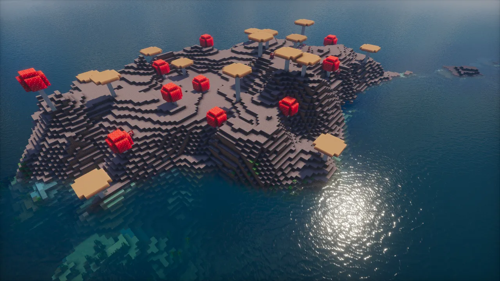
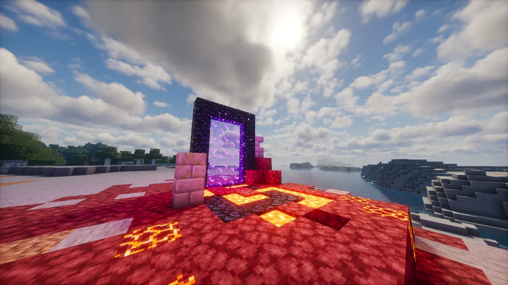
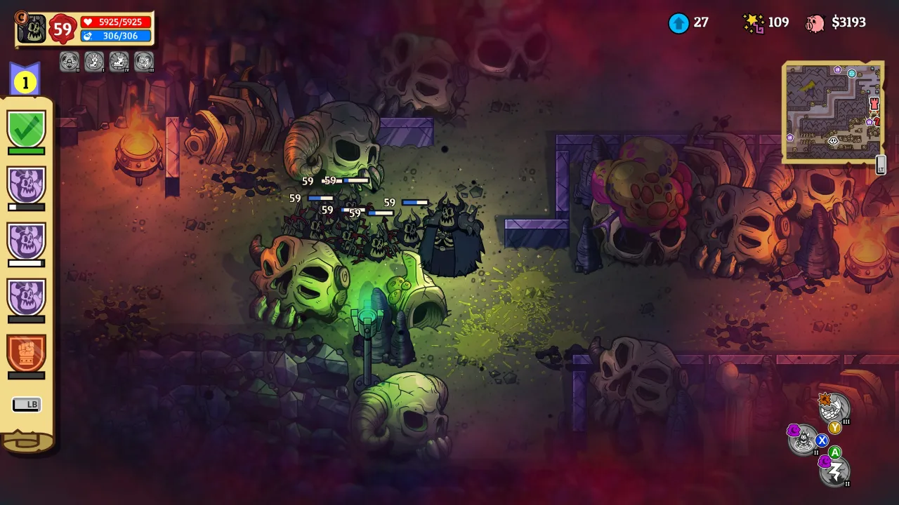
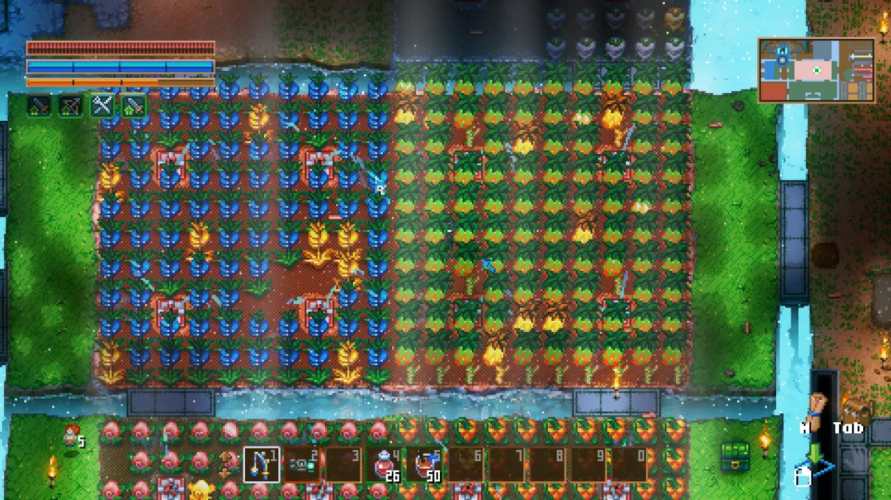
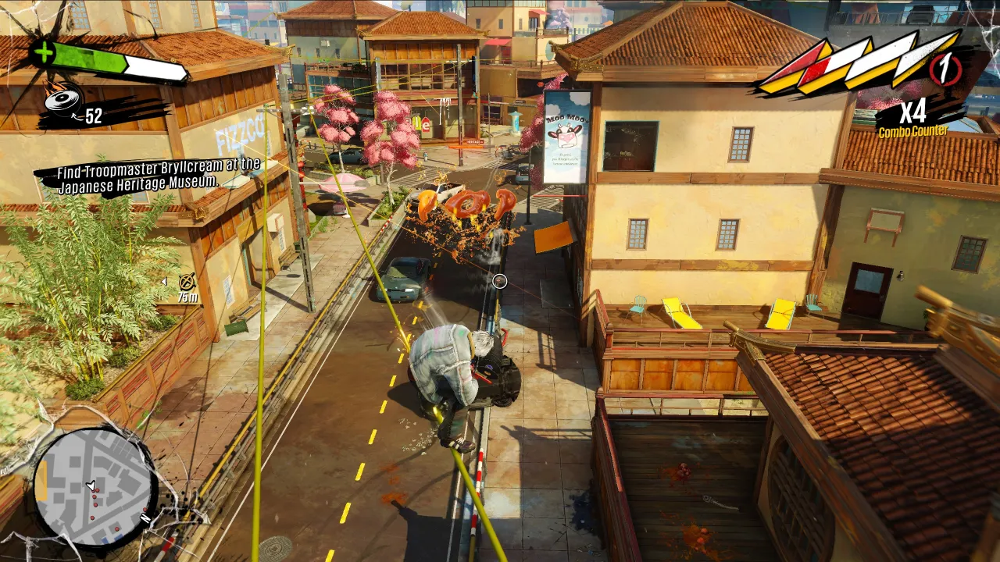

Joachim PATINIER, Saint-Jérôme au désert, 1515-1520, huile sur
panneau de bois, 78 cm x 137 cm, Musée du Louvre, Paris
Je tiens à remercier mon directeur de mémoire, Damien BAIS, pour m’avoir guidé durant la rédaction de ce mémoire. Je remercie aussi Catherine FARON, pour le temps accordé à la relecture soigneuse de mon travail ainsi que ses petites notes "???".
Je remercie également Jérémie NUEL pour m’avoir éclairé sur la création d’un abécédaire comme forme d’écriture.
Je remerci aussi ma famille pour m’avoir donné la chance de découvrir le magnifique médium du jeu vidéo dès mon enfance.
La campagne, c’est un jeu contemplatif bourré de side quests. J’y ai passé mon enfance avant d’arriver à Saint-Etienne pour mes études supérieures. Après plus de 18 000 heures de gameplay sur la map Haute-Garonne, j’ai exploré la plupart des quêtes disponibles. Pour découvrir les mécaniques de cet environnement, il suffit d’arpenter ses champs et ses bois pour s’imprégner de l’ambiance du sud.
Je me rappelle passer des heures à glander dehors, sans but. Je m’allongeais dans les herbes hautes pour observer le petit monde qui rampe à nos pieds. J’aimais imaginer que j’observais de petits univers peuplés de créatures et de plantes étranges.
Pas d’internet, pas d’écran, mais je jouais déjà à mon premier God Game. Ma mère m’avait donné un plan de Sedum rupestre en m’expliquant que cette plante repoussait même si on la coupait en morceaux de la taille d’un grain de sable. J’entrepris alors de créer un royaume de sedum dans le vaste jardin de ma maison. Pendant une après midi entière, je répandis des morceaux de sedum partout. Je créais mes propres biomes, mon propre univers.
Aujourd’hui quand je passe des vacances là-bas, je souris en flânant dans le jardin, car je peux voir des colonies de sedum dans chaque recoin.
Finalement, l’ordinateur arrive dans ma famille et mon père, un grand joueur d’Age of Empires, me fait découvrir le jeu vidéo. Ce qui m’a tout de suite plu, c’est le menu de création qui permet d’inventer ses propres scénarios. J’ai ensuite réussi à mettre les mains sur SPORE. Ce jeu reste encore aujourd’hui une de mes inspirations.
Développé par Maxis, ce jeu simule le parcours d’un univers entier en suivant une espèce que l’on crée selon nos envies. Je passais des heures à transporter et à modifier des espèces et des plantes sur des planètes que je pouvais terraformer pour créer des mondes aliens harmonieux. Je me suis intéressé à ces mondes virtuels de la même manière que je le faisais dans la vraie vie. Je me baladais en observant les plantes et les animaux qui peuplent ces jeux avec le plus grand intérêt. Il y avait bien sûr des jeux sur lesquels je ne faisais que me défouler, comme Battlefield, mais la plupart de mon temps de jeu était concentré sur Minecraft. Reconstruire des forêts dans mon style, creuser des rivières et des lacs pour tout peupler d’animaux.
Ce mémoire, c’est pour moi le moyen de rendre compte des mécaniques et des éléments esthétiques qui me plaisent dans le jeu vidéo. Ce médium permet d’offrir des possibilités d’interaction inédites avec l’observateur qui devient un joueur. Le jeu vidéo permet aussi de générer des expériences uniques pour chaque personne qui y joue. Je pense aux jeux qui utilisent la génération procédurale pour itérer une infinité de mondes sans perdre leur identité.
Je veux rendre compte de comment ces entités interagissent entre elles et les mécaniques qui en découlent. Peu importe que je termine ou pas ces jeux, tant que je peux découvrir toutes les façons dont le jeu interagit avec moi. J’arpente les univers des jeux en observant tout ce qui m’entoure, je lis les petites descriptions des objets et j’observe leurs textures.
Qu’importe le genre de jeu qu’on crée, la question de la direction artistique se pose. Elle fait partie du processus de game design. Les mécaniques qu’on veut inclure dans le jeu ont besoin d’être illustrées par une vision artistique. Il faut réfléchir à quel style utiliser, quelle caméra sera le mieux adaptée, la taille des meshs…
Ce mémoire recense une liste de jeux qui selon moi proposent des visions intéressantes dans leur démarche pour appréhender le lien entre le joueur et son environnement. Qu’il s’agisse des choix de game design ou de direction artistique, ces jeux proposent tous des idées novatrices qui m’inspirent en tant que créateur.
Il est intéressant d’étudier le rapport du joueur à la nature numérique puisque classiquement la nature et la technologie sont deux sujets séparés. Pourtant, selon les dires d’Alenda Y.Chang, le médium du jeu vidéo se prête particulièrement bien à traiter des sujets complexes d’une manière simple1.
La façon dont les créateurs utilisent la nature dans leurs jeux implique des solutions esthétiques et des mécaniques importantes qui impactent le gameplay. Certains jeux emploient la nature comme simple artefact décoratif pour assurer l’immersion du jeu. D’autres jeux font interagir le joueur avec cette nature en l’incitant à l’explorer.
Mais rares sont les jeux qui prennent le parti de faire de cette nature le sujet principal. Tous ces jeux vont adopter des styles différents en fonction d’une multitude de contraintes.
L’abécédaire est à l’origine un livre à but éducatif. On illustre chaque lettre de l’alphabet par un mot, un thème ou des images. C’est aussi un outil formidable pour assembler les éléments d’une thématique pour illustrer un propos. À l’origine destiné aux enfants, comme le jeu, l’abécédaire a évolué à travers les siècles pour s’adresser aux adultes. Ce type de livre permet de mettre en lien rapidement des notions parfois éloignées aux premiers abords. Dans l’abécédaire de Deyan Sudjic sont sélectionnés une petite liste de mots qui lui permettent de parler des enjeux de la vie moderne. L’abécédaire de Jean-Noël Blanc est quant à lui éparpillé à travers les récits et les poèmes d’autres écrivains dans Le pays des matins bleus, un recueil d’artistes qui parle de la région du Forez.
La rédaction de ce mémoire sous la forme de l’abécédaire trouve son inspiration dans la série d’interviews de Gilles Deleuze, où ce philosophe illustre chaque lettre de l’alphabet par une réflexion sur un mot2.
Cette façon de déconstruire un sujet aussi complexe et vaste que la philosophie en petites portions m’a rappelé la façon de fabriquer un jeu vidéo. On assemble des assets dans un moteur de jeu pour créer des biomes, on crée un environnement pour les joueurs. Chaque petit élément interagit avec ses voisins à l’aide de signaux pour former un tout.
Cette démarche fragmentée permet une fluidité dans la pensée et laisse le lecteur ou le joueur appréhender le discours de l’auteur à son rythme. On peut lire quelques mots et s’arrêter pour reprendre ailleurs plus tard, à la manière qu’on a de sauvegarder dans un jeu pour faire une pause.
C’est dans cette optique éducative des abécédaires que j’écris ce mémoire. J’y analyse différents aspects de ce que j’observe dans le jeu vidéo, et j’explique la terminologie associée. J’ai choisi une série de termes et de jeux qui m’inspirent en tant que joueur et créateur. Cet abécédaire se veut être un outil de réflexion pour moi ainsi que pour ceux qui souhaiteront le lire. Je me concentre en particulier sur les relations entre le joueur et son environnement, mais je donne aussi des éléments clés qui m’aident à expliquer ces notions.
L’aspect modulable de l’abécédaire me rappelle la façon de créer un jeu vidéo. On assemble des petites briques de code, de couleur et de composition pour créer un tout cohérent. La direction artistique veille à ce que ces éléments soient en accord les uns avec les autres. De la même manière, j’oriente mes explications pour illustrer les thèmes que j’aborde dans ce mémoire.
Joachim PATINIER, Saint-Jérôme au désert, 1515-1520, huile sur
panneau de bois, 78 cm x 137 cm, Musée du Louvre, Paris
Cet abécédaire n’est en aucun cas “complet” ni exhaustif puisque des dictionnaires et des encyclopédies existent. Il est tout de même notable qu’il existe peu de travaux sur les notions qui concernent le jeu vidéo3.
La question de la création d’environnement dans un jeu vidéo est cruciale. Cette partie du jeu constitue la majorité de l’espace sur l’écran du joueur. Les décors encrent les personnages dans leur réalité et donnent une ambiance aux scènes que l’on explore. On parle souvent d’immersion pour parler du niveau d’implication du joueur dans le jeu. Véritable support de narration, cet environnement appelle le joueur à l’arpenter pour y découvrir des secrets et des ressources. Il peut également l’inciter à suivre certains éléments pour le faire avancer sans narration explicite. Le directeur artistique et son équipe combinent les mécaniques de gameplay à une esthétique définie pour créer un décor homogène. Il s’agit de poser et de prendre en compte les limites physiques du jeu, avec des montagnes par exemple, et décider du type d’interaction que le joueur entretient avec son écosystème. Le jeu peut par exemple proposer un système de cuisine avancé, où le joueur devra peut-être “farmer” les ressources plutôt que d’explorer pour les récolter. La création d’un décor appelle donc des compétences de composition qui rappellent les peintures de paysages. Ce genre de peinture, qui s’est vraiment imposé avec Joachim Patinier et Alfred Dürer, résonne encore dans les grandes perspectives de jeux comme Kingdom Come Deliverance. Au lieu d’utiliser une toile pour créer un monde, les artistes d’environnement utilisent des moteurs de jeu pour agencer les différents assets qu’ils ont créés. La popularisation de moteurs de jeux gratuits et open source ainsi que le développement des outils nécessaires à la création numérique ont fait fleurir le monde du jeu vidéo. Aujourd’hui, une myriade de titres présente des expériences totalement différentes les unes des autres. Leurs environnements variés transmettent tous des visions artistiques différentes, parfois même en transformant une simple marche en véritable spectacle visuel. Chaque jeu agit comme un biome contenant ses propres mécaniques, sa propre vision artistique. Il est intéressant aujourd’hui d’observer ce paysage de jeux et d’en faire le tour pour trouver de l’inspiration. Ce mémoire explore les formes que ces paysages prennent ainsi que les mécaniques et les décisions artistiques qui y sont liées. Ce préambule suggère un début de lecture des entrées qui suivent, mais libre au lecteur de déambuler à travers ce mémoire librement.
"Les jeux vidéo possèdent cette propriété, qu’aucun autre médium
ne comporte nativement, de proposer non seulement une représentation du
monde
mais aussi un modèle."4
Une partie importante de Monster Hunter est l’affutage de l’arme entre les périodes de chasse. Ce moment devenu un motif de la franchise est soigné comme un rituel par les artistes du jeu. Le bruit du métal en friction avec la pierre, les trois coups qui rythment tout l’univers des tâches du jeu ainsi que l’effet lumineux à la fin de l’animation donnent l’impression au joueur de vraiment travailler son outil. Ce moment iconique du jeu est constant entre les opus de la série.
Ce sont ces moments de calme entre les phases d’action qui permettent au joueur de s’imprégner de l’environnement autour de lui. Dans les RPG, on passe du temps à se balader entre les personnages non-joueurs pour accomplir des quêtes, acheter de l’équipement. Ces moments qui peuvent paraître anodins aident en vérité à accentuer l’immersion du joueur dans le monde virtuel qu’il explore.
Monster Hunter, pause près d’un lac dans le biome fungique
Léo Spitze explique que le terme “ambiance” provient du terme latin ambire qui évoque une étreinte chaleureuse.5 L’ambiance dans un jeu vidéo est un élément essentiel de sa conception. C’est ce qui va immerger le joueur dès le lancement du jeu. Cette ambiance est le premier élément narratif que le joueur rencontre pour comprendre dans quel univers il s’aventure. Par exemple, dans Hunt Showdown, le lancement du jeu s’accompagne des soupirs de fantômes et de chants qui rappellent les westerns. Le jeu débute par un écran noir qui annonce le monde occulte dans lequel nous mettons les pieds. A contrario, dans Stardew Valley, c’est l’avatar d’Eric Barone, le développeur, qui nous accueille, pour nous emmener sur un ciel bleu dans le menu. C’est l’expression du fait que le jeu se veut chaleureux et personnel. Une fois dans la ville de Pelican, nous retrouvons ce sentiment chaleureux dans la palette de couleurs vibrantes utilisées. Le jeu nous fait arriver au printemps, idéal pour commencer à planter nos champs et profiter de la météo clémente. Les arbres entourent le cadre de la caméra pour resserrer le joueur dans un cocon de verdure. Le pixel art renforce ce sentiment de bien-être par la simplicité qu’il exsude, nous rappelant des jeux plus rétros, puisque l’essence même du jeu réside dans la fuite de la course à la modernité.
L’ambiance participe bel et bien de ce qui fait un monde, de ce qui lui donne chair et lui confère un visage.6
Hunt Showdown, entrée de la basse-ville de Deshawn
Les couleurs chaleureuses et le style "mignon" de Slime Rancher 2
plongent le joueur dans un état de détente.
Le thème de l’apocalypse est récurrent dans le jeu vidéo. Une bonne scène apocalyptique se doit de mettre en avant la tragédie du sort de l’humanité face à la destruction de la civilisation entière. Ruines, corps décharnés et véhicules délabrés sont au rendez-vous. Il ne reste plus des constructions humaines que du métal rouillé. La nature reprend ses droits, mais c’est une nature violente qui ne laissera pas l’humanité reprendre ses droits aussi facilement.
Les jeux d’apocalypse se déroulent dans des environnements très hostiles pour le joueur, avec généralement un accent mis sur l’immersion par la narration. Dans Metro, nous les ruines du métro moscovite avec une torche à la main, avec quasiment aucune interface entre nous et l’obscurité. Les batteries des outils sont affichées par des jauges sur les outils eux-mêmes. Cela évoque Dead Space, un jeu dénué d’UI, avec des indicateurs sur le dos du personnage. Ce genre de jeu mise sur l’absence d’UI pour favoriser l’aspect cinématique du jeu. Le joueur traverse des paysages grandioses alors, il faut le laisser admirer ce qui l’entoure.
Le fps (first person shooter) se prête très bien à la narration, mais le genre apocalyptique connaît aussi un grand succès dans le monde du RPG avec Kenshi. Dans ce jeu, le joueur erre dans un futur lointain où les robots, des monstres et les derniers hommes se côtoient dans un désert sans fin. Ce qui fait la force du jeu, c’est la non-linéarité des histoires qui forcent le joueur à créer son propre chemin. Les alliances se créent puis s’effondrent, nous pouvons décider de jouer le loup solitaire ou de bâtir une ville.
L’apocalypse est un thème qui a été le terreau d’une grande partie des meilleurs jeux de narration du marché. Cette destruction massive recentre les narrations sur les interactions sociales qui maintiennent les dernières communautés de survivants. Ce terreau favorise la création d’histoires passionnantes comme la série de Walking dead par le studio Telltate. La narration du jeu est accompagnée d’une composition soignée des éléments du décor. Un couteau de cuisine lors d’une scène d’action est placé à un endroit tel que le joueur le trouve facilement du regard.
Dans Metro Exodus, tous les choix que nous aurons pris au cours du jeu décident de la fin de notre aventure. Si nous avons pris des décisions violentes, qui résultent souvent dans la perte de membres de notre équipage, il n’y aura pas assez de donneurs de sang pour nous sauver des radiations à la dernière mission. Nous ne perdons pas le jeu, mais nous avons la “mauvaise” fin, comme un retour de bâton pour avoir voulu aller trop vite dans nos choix.
Ces jeux ont représenté plusieurs millions de ventes à travers toutes les plateformes et ont reçu d’excellentes critiques sur la plateforme steam. D’autres jeux dans le même thème arborent les mêmes qualités, comme “The last of us” qui possède même une adaptation cinématographique.
Metro Exodus plonge le joueur dans les ruines du metro de
Moscou
Stalker utilise une gamme de couleurs qui rappelle les
radiations qui innondent "la Zone"
Dans Kenshi, le désert s’étend à perte de vue. On aperçoit les
ruines d’une civilisation passée entre les dunes.
L’arbre tient une place importante dans le worldbuilding de la plupart des jeux. Cette famille de végétaux imposants nourrit l’imaginaire humain depuis des millénaires et son impact dans le jeu vidéo est tout aussi notable. Dans des jeux comme Fortnite, les arbres sont des sources importantes de matériaux, mais aussi d’information. En effet, un arbre qui tombe se voit de loin et permet de repérer la position d’autres joueurs.
Dans d’autres jeux, l’arbre est un outil narratif. Par exemple, dans Elden Ring, l’Erdtree tient l’intrigue principale du jeu, et toise la map entière du jeu.
L’arpentage dans le jeu vidéo advient dès que le joueur se déplace dans de nouvelles zones de la carte. Il doit alors observer l’environnement qui l’entoure pour apprendre à s’orienter. C’est pendant cette phase de jeu que le joueur rencontre des personnages ou des éléments de gameplay.
Un jeu qui encourage l’arpentage se concentre sur la création d’un environnement riche en éléments. En particulier, les jeux Open Worlds font de cette exploration le cœur de leur gameplay. Un jeu qui maîtrise cet aspect est Elden Ring. Le joueur est lâché dans le monde de l’Entre Terre avec une vague introduction, sans réellement de guide. Libre à lui de se balader ou de deviner où le fil rouge de l’histoire se cache. Tout est là, prêt à accueillir le joueur dans une série de quêtes plus ou moins guidées. Cette approche rend le jeu plus accessible que ses ancêtres, qui proposaient des histoires très linéaires, forçant le joueur à affronter des monstres parfois trop difficiles pour un débutant. Dans Elden Ring, le joueur peut errer pendant une centaine d’heures sans s’ennuyer, sans avancer dans l’histoire et quand même progresser. Finir l’histoire devient alors une promenade de santé.
Cette philosophie de monde non linéaire a été popularisée par la sortie du jeu Zelda, Breath of the wild où le joueur peut explorer la carte entière avec très peu de restrictions. L’histoire se déploie au fur et à mesure qu’il explore, avec des éléments posés avec une précision chirurgicale pour le guider inconsciemment.
Elden ring propose d’explorer des paysages fantastiques créés
par Hidetaka Miyazaki avec l’aide de Georges R.R Martin.
Un effet billboard est un objet 3D qu’on trouve dans les moteurs de jeu. Il s’agit d’un plan qui fait tout le temps face à la caméra. On utilise cet objet pour mettre en 3D un élément plan, par exemple les noms au-dessus d’un item ou une barre de vie. Le jeu Sulfur est une très bonne utilisation de cet effet.
Until Then utilise l’effet billboard pour placer ses
personnages dans un environement 3D
Sulfur utilise la même méthode avec un style cartoon
La biocénose contient l’ensemble des espèces dans un milieu (biotope). Dans le jeu vidéo, on crée un biotope pendant les phases initiales de la conception du jeu avec les moodboards. Ces premiers concepts servent à poser les règles graphiques qui dirigeront le monde que l’on crée.

Planche de concept des Nains de l’univers de Monstergarden

Concept arts de Lars Sowig pour Hunt Showdown
Un biome est une délimitation géographique dans laquelle on trouve des espèces spécifiques à ce milieu. Chaque biome possède son esthétique, ses mécaniques particulières. Un exemple typique est le biome champignon de Minecraft. Dans Valheim, les biomes sont aussi les niveaux du jeu. Le joueur commence dans une forêt, puis il explore des biomes plus hostiles quand il améliore ses équipements.
Les premiers jeux à avoir utilisé les biomes comme véritable support de gameplay et d’esthétique sont les plateformers comme Super Mario. Le premier monde est naturellement le plus facile, donc il contient des couleurs et des éléments que le joueur connaît : des champignons, des tortues, de la brique… Puis les choses se corsent et les environnements deviennent plus exotiques, permettant d’introduire des mécaniques plus étranges pour enrichir le gameplay. Un exemple type est le monde de l’eau dans Super Mario, qui permet d’introduire les pouvoirs glacés ainsi que ceux de pingouin.
voici une liste de biomes que je trouve graphiquement intéressants rencontrés dans les jeux vidéos. Ces biomes définissent quels types de flore on va découvrir. Océan infini, Jungle de lave, Îles savonneuses, mégaville, jardin enchanté, enfers, paradis, grottes glacées, tunnels de chair, …
Valheim, biome des marécages, seul endroit où le joueur peut trouver du fer

Le boss est un élément incontournable du jeu vidéo. Dans les RPG, le boss est généralement un ennemi puissant, tandis que dans les jeux multijoueurs PvP, le boss est habituellement un joueur plus fort que les autres. Cependant, certains jeux approchent le boss d’une façon plus ingénieuse. Dans le jeu de cartes Balatro, un boss apparaît tous les trois niveaux avec un défi. Il peut désactiver certains pouvoirs, prendre des cartes, il enfreint les règles que le joueur essaie de poser avec son build. Le boss doit toujours représenter un test des compétences du joueur.
Le boss se démarque aussi du reste des ennemis par l’environnement qui l’accompagne. Il est souvent placé dans une zone spéciale à la fin du niveau. Le boss reprend les codes graphiques du niveau qu’il habite pour reprendre les mécaniques introduites ainsi que par pur souci de cohérence.
Dans DOOM 2016, le joueur affronte le Cyberdémon, un colosse de plusieurs mètres de haut partiellement augmenté par des composants technologiques et des armes modernes. Ce boss se cache au fond du niveau 9, dans les tréfonds du laboratoire Lazarus dans lequel sont conduites des expérimentations scientifiques sur des humains. Le niveau présente les derniers niveaux du laboratoire, où une cage immense semble avoir été forcée de l’intérieur. Pendant le niveau, le joueur peut entendre des pas lourds qui paraissent venir de plus loin. Durant le combat contre le Cyberdémon, le décor se transforme du laboratoire à une portion des enfers, où le démon gagne en puissance et se met à modifier le terrain pour piéger le joueur.
Balatro, défi du Mur
Monster Hunter, combat contre le Nergigante, dragon capable de
battre les autres boss du jeu, ultime challenge du jeu
Cyberdémon, durant la première phase du combat, dans le
laboratoire.
La botanique est la science qui a pour objet le végétal. Le botaniste étudie comment les végétaux sont organisés organiquement, quelle est la famille à laquelle ils appartiennent, leurs relations entre eux. La botanique recouvre le monde végétal, mais aussi celui d’autres organismes tels que les champignons et les microbes.
Dans un jeu vidéo, les végétaux doivent conserver une cohérence graphique entre chaque espèce, ce qui signifie pour le créateur reprendre certains motifs, certaines palettes de couleurs. Les plantes dans un jeu doivent interagir (ou pas) avec le joueur de manière adéquate à leur “nature”. Par exemple, dans l’univers de Mario, les champignons ont tous des pouvoirs permettant d’altérer la taille de notre personnage, de le rendre plus puissant physiquement. Les fleurs, elles, changent plutôt la nature de Mario, en lui conférant des pouvoirs surnaturels. Les concepteurs du jeu conservent la même taxonomie pour les mêmes “types” de power ups pour que le joueur comprenne presque avant même d’avoir essayé la plante. Les développeurs créent des liens rapides entre les éléments de gameplay pour éviter des tutoriels retors et les végétaux passent forcément par ce processus. La cohérence graphique n’est pas qu’un souci esthétique dans le jeu vidéo, mais aussi un outil narratif et technique.
Bustling Fungus est un champignon qui altère complètement la façon de jouer de Risk of Rain (RoR). RoR est une saga de jeu roguelite où l’importance du mouvement assure de rester en vie face aux vagues d’ennemis. Ce champignon, une fois dans l’inventaire du joueur, s’active pour soigner celui-ci ainsi que tous ses alliés dans la zone autour de lui. Cependant, il ne s’active que si le joueur reste immobile pendant trois secondes.
Ce simple item de rareté “normale”7 donne donc naissance à des stratégies de cheese8 inédites qui vont totalement à l’encontre de l’essence du jeu. L’ingénieur de RoR peut poser des tourelles qui imitent son inventaire. Étant statiques, elles deviennent ainsi de vraies stations de soin constant, permettant de compenser le manque de mobilité du personnage. Il suffit ensuite de trouver une opinion de N’kuhana pour convertir ce soin massif en dégâts et faire basculer le jeu en mode AFK farm.
Cette modification de la façon de jouer pousse le joueur à appréhender l’environnement autour de lui pour placer ses tourelles de manière stratégique. Il va transformer une zone du jeu en petit refuge dans lequel lui et ses alliés se soignent durant les affrontements. Des champignons poussent sur le joueur qui en possède. La zone de soin est délimitée par des champignons similaires qui poussent au sol et disparaissent tant que l’effet est actif.
Risk of Rain 2, Personnage recouvert de champignons de soin.
Core Keeper est un jeu développé par le studio PugStorm dans lequel nous explorons en solo ou en coop un univers souterrain magique. Les biomes abritent différents organismes qui entrent souvent en compétition. Le joueur doit se frayer un chemin entre ces monstres pour récupérer les précieuses ressources et découvrir les secrets que cache chaque biome. Le jeu s’inspire fortement de Terraria dans le gameplay mais le mélange intelligemment avec Stardew Valley et Satisfactory pour offrir au joueur une multitude de styles de jeux différents.
Le pixel art est une méthode très prisée du jeu indépendant. En quelques pixels, on peut très vite représenter un sujet, l’animer ou itérer en série. Ce style qui, à ses débuts n’était que le produit des compétences graphiques des ordinateurs, est aujourd’hui une véritable position esthétique.
Core Keeper règle la rigidité du pixel art en utilisant des shaders qui déforment l’image sur une haute résolution. Un éclairage dynamique est utilisé pour plonger le joueur dans une ambiance fantaisiste. Les boss du jeu sont des modèles 3D sur lesquels un shader de pixellisation est appliqué. Le pixel art devient inefficace sur des hautes définitions car il est alors simplement de l’illustration “classique” et perd de son efficacité.
L’exploration dans Core Keeper est récompensée par la découverte d’éléments qui enrichissent le lore du jeu. Pour améliorer le personnage, il suffit de faire : par exemple, pour devenir un meilleur fermier, il suffit de cultiver des plantes. Ces plantes nous fournissent des buffs plus que nécessaires pour affronter les boss qui hantent ces galeries. Chaque fruit, légume ou racine nous donne un buff léger pour nous indiquer quel genre de plat on peut cuisiner. Ensuite, libre à nous de le mélanger avec un autre ingrédient de notre choix pour tenter d’obtenir un plat qui nous transformera en véritable boss final.
Deux joueurs explorent le biome de la jungle dans Core Keeper.
La cryptbloom est un item de League of Legends qui fait pousser des grosses fleurs à la mort d’un ennemi. Cette plante fleurit et explose dans une impulsion de soin pour les alliés du possesseur de l’item. Inspiré par l’item Lepton Daisy de Risk of Rain 2, cet objet situationnel peut faire sortir gagnant une équipe d’un combat serré.
La cryptbloom reprend le thème de la corruption du “Vide”, qui englobe une gamme de personnages, d’objets et surtout le cours du jeu. Au cours de la partie, les monstres du vide gagnent en puissance jusqu’à faire apparaître leur boss, le Baron Nashor. Ce dernier altère la map entière en détruisant des murs et corrompt les entités présentes sur la map.
Les jeux vidéos associent souvent le thème de la corruption avec la couleur violette. Le Vide dans League of Legends, le Nether dans Minecraft, le néant dans Astroneer. La corruption dans les jeux vidéos est un thème récurrent qui entraîne des variations sur un thème initial. Le jeu Terraria fait de la corruption un élément clef du gameplay. Ce biome rogne progressivement sur les biomes adjacents des blocs. L’herbe change de couleur pour passer du vert au violet sombre. Le joueur débutant finira par se rendre compte de ce phénomène à force de se balader aux alentours de la lisière maudite. Le jeu remplace petit à petit les blocs à proximité du biome pour répandre la corruption. Pour effectuer ce genre d’effet de manière propre, on utilise un qui gère la couleur des blocs. Quand le bloc change de thème, les valeurs dans le shader changent, la couleur bascule sur l’autre graduellement. Dans Minecraft, on observe l’utilisation de ce genre de technique pour fondre les sols et les feuillages des différents biomes.

Baron Nashor et ses sbires


Biome corrompu dans Terraria
Plateforme mystérieuse dans Astroneer
Le compendium est un condensé de connaissances sur un sujet. Dans les jeux d’aventure, le compendium est un élément important de gameplay puisqu’il suggère au joueur les éléments qu’il n’a pas découverts.
Dans No Man’s Sky le compendium est infini parce qu’il existe une infinité de planètes et de créatures. Les joueurs peuvent en revanche utiliser toutes ces planètes pour cuisiner les plats d’un compendium particulier fini.
No Man’s Sky permet d’explorer des millions de planètes aux
conditions différentes.
Dans le jeu vidéo, on qualifie de “complétistes” les joueurs qui considèrent un jeu terminé quand il est complété à 100%. Ce type de gameplay entraîne donc la création d’herbiers et de bestiaires dans les options des jeux que l’on peut consulter pour avoir plus d’informations, de lore, sur les différents éléments du monde que l’on explore9.
Les joueurs complétistes se distinguent des joueurs “hardcore” qui s’amusent à terminer des jeux avec des difficultés supplémentaires. Certains terminent des jeux sans recevoir un seul coup, d’autres sans aucun équipement. Les complétistes se distinguent également des speedrunners, qui tentent de finir le jeu le plus vite possible, quitte à utiliser les bugs du jeu ainsi que les bugs du moteur de jeu ou même la physique de notre monde. Le speedrunner DOTA_Teabag aurait réalisé le meilleur temps sur un niveau de Mario 64 grâce à une particule ionisée qui aurait frappé la console au bon moment pour l’aider à passer une étape plus rapidement que ses adversaires. Le complétiste agit comme un biologiste. Il passe du temps à étudier les maps, lire les guides des forums pour augmenter ses chances d’accomplir les défis.
Il existe deux types de cuisine dans le jeu vidéo. Dans le premier type, la cuisine est au cœur du jeu et tout le processus de cuisiner est transformé en une série de minis jeux, souvent dans le but de satisfaire les demandes d’un client plus ou moins pressé. Ces jeux-là utilisent la cuisine comme prétexte de gameplay. Malgré la qualité de certains de ces jeux (Overcooked par exemple), le manque d’originalité quant à la façon de cuisiner rend ce type de jeu quelque peu démodé.
Dans le deuxième type, la cuisine est intégrée dans le jeu comme partie intégrante de son gameplay. En obtenant de nouvelles ressources, le joueur expérimente de nouvelles recettes pour tenter de recevoir des buffs plus puissants. Ces jeux-là adaptent la cuisine au médium du jeu vidéo. Dans Zelda breath of the Wild, le joueur doit découvrir les recettes de cuisine en expérimentant avec les aliments qu’il trouve dans la nature. Les plats cuisinés peuvent offrir des avantages ou être ratés. Cette mécanique encourage le joueur à explorer et à continuer de découvrir de nouvelles plantes pour en expérimenter les effets. Chaque plat réussi possède son image, inspirée des cuisines du monde entier. Il existe une base de plats en nuances de gris, qui change de forme et de couleurs selon les ingrédients que l’on utilise.
D’autres jeux tels que Potion Craft mettent la mécanique de la cuisine en avant . Dans ce jeu, on collecte des plantes dans notre jardin et on les utilise pour fabriquer des potions. Le jeu reprend les esthétiques des peintures médiévales européennes pour nous mettre dans la peau d’un alchimiste de l’époque qui tente de créer la pierre philosophale. Les ingrédients, en plus de leurs propriétés chimiques, possèdent aussi une trajectoire. Cette trajectoire est utilisée dans la cuisine du jeu, car les recettes sont en fait situées sur une carte, où l’on doit atteindre le point précis pour réaliser la potion parfaite désirée.
Les jeux qui mettent la cuisine en scène en tant que partie intégrante de leur gameplay doivent trouver des solutions graphiques pour simuler une expérience de cuisine personnelle, qui aide le joueur à se sentir dans l’univers du jeu.
“C’est de la cuisine qui est confectionnée, non des aliments industriels qui sont assemblés”. Plat de Résistance, soigner les cantines pour réparer le monde, Germinal Peiro et Serge Added
Comment rendre un désert intéressant? Le vide est un ennemi de l’immersion s’il est mal géré, parce qu’il peut très vite ennuyer le joueur. Généralement, même dans un désert, le joueur rencontre de petites herbes, de petits insectes. Les roches sont stylisées et dispersées un peu partout pour peupler ce plan de sable. Je pense au jeu Journey qui fait partie d’un genre jeu appelé walking simulator. Dans ce jeu, on explore un désert pour atteindre le sommet d’une montagne.
Le désert est parsemé de vallons dans lesquels le joueur trouve d’anciennes structures qui témoignent d’une ancienne civilisation. Les déplacements du joueur se traduisent par une traînée dans le sable. Autour de lui sont parsemées des stèles ainsi que des dunes à perte de vue. Ces éléments rythment visuellement le temps de jeu, pour donner au joueur le sentiment d’avancer.
L’écran est aussi traversé par des particules de sable qui ajoutent de la profondeur à l’image. Le joueur est également entouré d’un paysage sonore riche. Une musique constante est modulée en fonction de ce qui se passe à l’écran. On entend le bruit du vent qui souffle autour de nous, ainsi que les bruits de nos pas. Le tissu du personnage aussi produit des bruits discrets. Ce tout forme un nuage auditif qui plonge le joueur encore davantage dans l’univers qui l’entoure, malgré le manque de gameplay complexe ou de réelle action.
Cette solitude est brisée par la rencontre éventuelle d’autres personnages en tunique qui errent. Les joueurs peuvent se rencontrer et s’aider dans leur quête sans pouvoir communiquer. L’inconnu peut devenir un ami potentiel10.
Journey, capture d’écran d’un joueur observant le paysage.
La direction artistique (DA) vise à assurer la cohérence et la pertinence d’un univers dessiné par plusieurs artistes. Elle supervise toutes les étapes d’un projet, en partant du storyboard jusqu’au placement des assets dans la map.
Les jeux indépendants misent souvent sur une DA qui ose prendre des risques pour se démarquer de ses “concurrents”. L’émergence des jeux indés tels que Braid permet cette prise de liberté de la part des développeurs. Braid présente un art détaillé dans un univers qui rappelle les vieux plateformers comme Super Mario. Il sort en 2008, au moment où l’industrie AAA se tourne totalement vers les jeux en 3D.
Braid, anniversary edition
Dans les jeux, un drop est un item qu’on peut obtenir. On parle de “taux de drop” pour désigner la probabilité qu’un item soit lâché par une entité. On observe aujourd’hui une popularité croissante de l’association de couleurs aux drops. Cela aide le joueur à déterminer visuellement quels drops sont prioritaires aux autres. Le jeu qui a amené au-devant de la scène ce style de drops est Fortnite, qui a classé ses objets récupérables par des couleurs selon leur rareté, leur puissance.
L’écosystème d’un jeu est un élément crucial pour impliquer le joueur dans ce qui se passe à l’écran au-delà de l’action. Je considère qu’il existe trois grandes catégories d’écosystèmes dans le jeu vidéo.
La première regroupe les jeux où les actions et interactions sont centrées sur le joueur. Les ennemis sont inactifs tant que le joueur n’est pas dans la salle, ils n’attaquent que le joueur et ne semblent pas interagir les uns avec les autres. Un exemple de tel jeu est DOOM, qui missionne le joueur de purger les enfers à coup de plomb.
La deuxième catégorie regroupe les jeux qui font du joueur un des maillons de la chaîne alimentaire de leur univers. Les entités du jeu se déplacent quand le joueur n’est pas là, interagissent entre elles. Par exemple, Rain world met en scène un écosystème entier qui évolue en l’absence du joueur. Les prédateurs communiquent sa position et le suivent entre les niveaux. D’autres animaux se nourrissent des fruits dont le joueur a aussi besoin, ajoutant de la difficulté au jeu. La dernière catégorie regroupe les jeux qui mettent le joueur en dehors du système. Celui-ci devient un observateur de l’environnement qui ne se soucie pas de lui. Par exemple, le jeu Mountain nous place face à une montagne. Nous pouvons peut naviguer autour, mais c’est la seule interaction possible. Le jeu récompense l’attente en créant des événements aléatoires.
Quelques jeux appartiennent aux deux dernières catégories qui ne sont donc pas disjointes. Par exemple, Stone simulator permet au joueur d’incarner un caillou. Le joueur On peut simplement juste observer autour de lui le temps passer. Les avis des joueurs prouvent cependant qu’une idée aussi saugrenue suffit pour faire rire, certains avec plus de 50 heures de jeu. Le jeu se moque délibérément de l’industrie en proposant des graphismes de très haute qualité, avec un mode multijoueur et un classement des “meilleurs cailloux”.

Doom 2016, niveau 8, le départ du niveau place le joueur face à
la carcasse d’un titan.
Rainworld, les lézards verts communiquent entre eux la position
du joueur pour le traquer à travers la map.
Stone Simulator, le joueur observe le paysage.
En fonction des niveaux ou des zones d’un jeu, il est nécessaire de leur créer des spécificités propres pour les rendre uniques. C’est là que le créateur doit décider de quelles mécaniques et quelles entités seront endémiques à cette partie propre du jeu. Par exemple, dans Nobody saves the world, le joueur incarne un mage polymorphe. En fonction des zones qu’il explore, il doit prendre différentes formes pour s’adapter aux dangers qu’il va affronter. Pour découvrir de nouvelles formes, il doit explorer ces zones. Il peut généralement trouver une forme optimale pour la zone qu’il explore, par exemple un rat pour se déplacer dans les petits passages de la déchetterie maudite ou un nécromancien déchu pour utiliser les corps du cimetière hanté.
Dans Valheim, chaque biome abrite différentes espèces qui peuvent parfois s’aventurer aux lisières des autres. Cependant, chaque biome cache un boss endémique à son environnement, qui attend d’être découvert.

L’environnement d’un jeu évolue pour suivre la narration ou les progrès du joueur. Dans certains jeux comme Stardew Valley, le joueur peut dégager des rochers qui bloquent des routes en progressant dans l’histoire. Il peut également construire dans des zones qui ne sont pas destinées à cette fonction initialement. Sur les zones tampon entre la ville et sa maison, il peut placer des coffres et des machines, pour gagner de la place dans la base principale.
Certains jeux créent des environnements évolutifs pour augmenter le gameplay. Dans Battlefield 4, DICE utilise le système Levolution, qui permet à la map de changer en temps réel. Cette fonctionnalité permet de renverser le cours d’une partie en inondant certaines zones ou en faisant écrouler des gratte-ciels sur certains objectifs.
Dans Spore, le joueur peut entièrement terraformer les planètes de la galaxie. Il peut planter des espèces d’autres mondes pour altérer l’atmosphère. Ce système d’environnement dynamique peut être exploité pour exterminer la civilisation antagoniste majeure, les Grox. Il faut terminer le jeu pour débloquer suffisamment d’équipements pour vaincre les Grox, qui ne proposent pas de négociation de paix. En revanche, si le joueur parvient à passer sur chaque planète et la rendre rapidement invivable, les Grox meurent très vite sans pouvoir agir.
Battlefield 4, au début de la partie, la tour centrale garde le
point C à son sommet.

La tour s’effondre si on détruit les poteaux, créant une nouvelle zone
de combat sur le point C.
L’ennemi dans le jeu vidéo prend plusieurs formes. Dans un jeu player versus environnement (PvE), les ennemis sont guidés par des algorithmes. À l’inverse, dans un jeu player versus player (PvP), le joueur affronte d’autres joueurs. Certains jeux ont récemment adopté le genre PvPvE, où les ennemis programmés sont aussi importants que les autres joueurs.
On parle souvent d’un platformer ou d’un jeu de puzzle quand l’environnement est l’ennemi du joueur. Le joueur doit sauter de plateforme en plateforme pour traverser les niveaux. Ce style d’environnement est axé sur la surprise, pour engager le joueur à activer ses réflexes. Dans It takes two, les joueurs doivent s’aider pour résoudre les puzzles des niveaux. Ils incarnent deux poupées qui tentent de retrouver leurs formes humaines et sauver leur couple. Le jeu met en scène les différentes pièces de la maison pour proposer une série de niveaux où le joueur doit esquiver, grimper et sauter.
Il est inévitable d’entendre parler de farm quand on joue aux jeux vidéos. Le farm, c’est une accumulation de ressources massives, souvent grâce à des moyens répétitifs ou automatisés. Le joueur peut tout farmer, de l’XP, de l’or, des diamants. Le farm constitue même l’essence de certains jeux, comme Path of Exile. Le joueur complète le même donjon en boucle pour avoir le drop légendaire dont il a besoin pour crafter sa pièce d’armure. Je distingue deux types de farm, celui qui se veut “manuel” et celui industrialisé. Dans PoE, le farm se fait à la main, en nettoyant les donjons de ses monstres à l’aide d’équipements optimisés pour le niveau. Ce genre de jeu va donc classer les objets par rareté et mettre l’accent sur le design des miniatures de ces objets. PoE utilise une perspective isométrique avec un point de vue très haut. Nous explorons des ruines et des paysages fantastiques. Le jeu brille par l’étendue des effets que les personnages utilisent à l’écran. Nous voyons des boules de feu qui font tomber des éclairs, des grandes zones de poisons, des rosaces glacées. Le jeu illumine tel un feu d’artifice surréaliste et c’est en cela qu’il charme le joueur. Quel équipement lui permettra de faire une plus grosse explosion ? Dans ce type de jeu, l’interface à l’ouverture de l’inventaire pour consulter tous ces objets est tout autant travaillée. Certains jeux poussent l’idée à l’extrême comme Backpack Battles où le joueur organise le sac de son aventurier. Le joueur organise les potions et l’équipement de son héros en fonction de son sac, pour affronter un autre joueur qui aura également préparé son sac. Celui qui réussira à mieux armer son personnage gagnera la partie. Les jeux de farm peuvent aussi donner au joueur les outils pour farmer les ressources. Dans Minecraft, des assemblages intelligents entre la physique du jeu et l’ia des entités permet de créer des usines hautement efficaces pour accumuler certaines ressources. Ces mécaniques sont bien souvent détournées de leur fonction initiale et les joueurs mènent des expériences quasiment scientifiques pour déceler la moindre faille exploitable11.
D’autres jeux créent une multitude d’objets qui rendent les tâches ardues et où le joueur est le logisticien de son usine. Par exemple, Satisfactory offre au joueur un monde ouvert dans lequel il peut fabriquer des chaînes d’assemblage immenses pour accomplir les demandes du jeu. Le jeu mélange une esthétique industrielle à une technologie futuriste pour créer un éventail de machines qui aide le joueur dans toutes ses tâches.
Path of Exile, aperçu de l’inventaire du joueur.
Backpack Battles, les inventaires des deux joueurs décident de
l’issue du combat.
J’aime voir dans les travaux de Fabrice Hyber un début d’univers vidéoludique. À travers ses peintures et ses installations, il propose un univers qui semble s’opposer à l’accumulation et la prédation qu’on retrouve dans la plupart des gameplays12.
Son approche du rapport humain-nature m’inspire dans la façon de concevoir les univers de mes jeux comme des zones d’échange plutôt que d’exploitation. Elle vient comme une réponse au fossé que l’humain creuse avec la nature: des hommes sont mélangés à la nature, perdus dans des architectures végétales, des arbres multicolores qui habitent les peintures harmonieusement.
Fabrice Hyber, Clearing, 2021

Fabrice Hyber, Confort Eternel, 2022
La flore englobe toutes les entités non animales vivantes dans un écosystème donné. Dans le game design, cette notion de flore est un peu différente car la flore d’un jeu vidéo se présente sous différentes formes. Certains murs sont constitués de plantes, comme dans Spiral Knight, où certaines zones sont délimitées par seulement des blocs d’herbe.
Dans d’autres jeux, la flore fait partie des entités vivantes. Plants VS zombie transforme les plantes en personnages qui bougent et parlent pour créer un univers loufoque qui dissimule une violence inédite.
Dans Spiral Knight, le mélange entre le style cartoon
et low-poly donne au jeu une esthétique inédite.
Plant vs Zombie dépote les plantes pour créer un jeu de combat
plein de couleurs.
Un game engine est un environnement de création pour le jeu vidéo. On importe les collections d’objets 3D dans le moteur de jeu pour les placer et les faire interagir entre eux. Le moteur de jeu agit comme une toile où les artistes et les développeurs vont agencer les mesh avec les shaders pour créer des univers à explorer.Les moteurs de jeu proposent un environnement réactif qui simulent des conditions physiques en temps réel.
Il est important de bien choisir son moteur de jeu lors de la création d’un jeu vidéo. Un jeu en 2D sera plus simple à produire sur Godot, alors qu’un jeu à grande échelle comme un RPG sera plutôt associé à des moteurs comme Unity ou Unreal. Les directeurs artistiques doivent jouer avec ces moteurs pour donner un style à leur jeu en modifiant une multitude de paramètres graphiques. Ces moteurs peuvent donner un style unique à un jeu, qui le démarquent de jeux concurrents. Par exemple, DICE studios utilise le moteur “maison” Frostbite. Il donne naturellement un ton bleu acier au jeu qui évoque aussitôt un Battlefield.
Les développeurs indépendants utilisent plus souvent les moteurs de jeu disponibles13 au public pour gagner du temps sur la conception de leur jeu. Avec des compétences en shaders une vision artistique bien orientée, leurs jeux se démarquent également de la masse.
Battlefield 3, désert
Buckshot Roulette, un jeu de roulette russe réalisé sur
Godot
Horizon Forbidden West utilise un moteur physique open source,
appelé Jolt. Jolt est devenu le moteur physique de
Godot en 2025.
Le gameplay couvre l’ensemble des actions et des interactions que le joueur accepte d’accomplir durant le temps de jeu. Sur la borne du premier pong était écrit “Avoid missing ball for high score”. Le gameplay prend aussi en compte la manière de jouer, c’est-à-dire comment le joueur entre en relation avec le jeu sur l’écran. L’environnement fait donc partie des éléments de gameplay à prendre en compte lors de la création d’un jeu. Dans certains jeux, l’environnement sert uniquement de limite physique pour guider le joueur. Dans God of War par exemple, le joueur suit les aventures du dieu de la guerre Atreus. Le gameplay consiste à faire traverser au joueur des niveaux, battre des ennemis et découvrir l’histoire avec des cinématiques. Il gravit de petits éléments de puzzle de temps en temps, mais l’essentiel de l’environnement sert davantage à plonger le joueur dans l’univers narratif qu’à être exploré. A l’inverse, Assassin’s Creed fait de l’environnement une part importante du gameplay. Tous les bâtiments peuvent être grimpés de différentes manières, les décors et la foule peuvent servir de cachette. Minecraft exploite au maximum cette idée d’utiliser l’environnement comme base pour le gameplay, le joueur peut tout détruire et reconstruire. Même la physique du jeu peut être exploitée au service du joueur.
God of War Ragnarok, combat contre un dieu-crocodile
Assassin’s Creed Unity explore Paris pendant la Révolution.
"À qui sait le voir, de la confrontation de l’osmose incongrue de la nature à celle de l’homme, une synergie s’en dégage qui crée accidentellement des tableaux d’une parfois terrible beauté. Et la nature, comme l’homme, coûte que coûte, s’en accommodement, accomplissant ensemble l’art de la vie."14
L’abécédaire de Gilles Deleuze est une grande inspiration pour la forme de ce mémoire. Au cours de 26 interviews, il illustre des thématiques par sa pensée. L’abécédaire lui permet de présenter des notions de philosophies à un large public et d’éviter de s’enfoncer dans des explications trop complexes.
La pinegrapple est un fruit de Core Keeper que l’on trouve dans le biome de la mer engloutie. Ce biome s’inspire de l’océan tropical et donc les plantes y sont basées sur la flore exotique. La golden pinegrapple est une version de ce fruit que le joueur ne peut obtenir qu’en faisant pousser la plante dans un champ. Les chances d’obtenir cette version améliorée dépendent du niveau de botaniste du joueur et ne dépassent pas 15%. Cette domestication de la plante pour en obtenir une variation plus “bénéfique” au joueur entraîne une extension des champs pour augmenter les récoltes de ce fruit amélioré.

Le grimdark est un genre de science-fiction qui décrit un univers cruel, bien souvent où la vie humaine perd toute sa valeur. On dépasse le cyberpunk qui se veut critique de la société. Les univers grimdark sont ravagés par l’autoritarisme, la religion et la technologie. Ces thématiques sont poussées à l’extrême, poussant à la création d’environnements inédits.
Les jeux qui utilisent un thème grimdark produisent des éléments hautement stylisés qui vont enfoncer le joueur dans un lore épais. Warhammer 40K Space Marine 2 est l’exemple parfait pour illustrer le grimdark. Le joueur suit l’histoire de Titus Demetrian, un général déchu au service de l’Empereur, le seigneur de l’humanité, en l’an 40 000. L’humanité entière est dévouée à cet être divin qui la pousse à envahir l’univers dans une guerre perpétuelle. Dans le jeu, nous traversons des citadelles en coupant des aliens, mais nous traversons aussi une esthétique particulière. Les bâtiments et les vaisseaux rappellent l’architecture gothique des églises européennes. La réalisation graphique du jeu est mise en avant par la caméra à la troisième personne, qui donne un champ de vision bien plus large qu’un FPS. Les séquences d’actions sont entrecoupées de dialogues qui laissent au joueur le temps d’admirer les décors formidables qui l’entourent.
Je trouve que Warhammer 40K SM2 est une perle rare dans la catégorie des jeux AAA15 qui sortent depuis quelques années, où la qualité artistique s’est perdue derrière les prouesses graphiques. Dmitry Kholodov, le directeur artistique, a su utiliser les compétences du moteur de jeu16 pour produire des visuels très stylisés qui rendent l’immersion très forte. Le nouveau moteur de jeu “Swarm” est développé en interne. Il permet de peupler les paysages de milliers d’aliens sans entraver les performances de l’ordinateur du joueur. Les aliens forment des volutes d’ennemis qui traversent le champ de bataille, pour se jeter sur le joueur.
Warhammer 40K Space Marine 2, défense d’une citadelle alliée sur un
monde lointain.

Les architectures des paysages peints par Beksinsky rappellent fortement
l’univers de Warhammer 40K.
Les jeux god like sont des jeux dans lesquels le joueur incarne une entité surpuissante qui guide des pnjs. Dans Godus par exemple, nous convertissons nos sujets pour amasser leur foi. Cette foi sert à écraser l’environnement pour agrandir le royaume de nos serviteurs. Age of Empire propose de revivre les moments forts des civilisations égyptiennes, romaines et grecques. Nous contrôlons chaque unité de notre faction comme un marionnettiste gigantesque. Dans certaines parties, nous pouvons même incarner une unité spéciale, un héros, qui généralement représente une figure historique de l’époque. Totally Accurate Battle Simulator permet de répondre aux questions les plus importantes qu’un enfant de huit ans se pose à longueur de journée. Qui gagnerait entre 10 crocodiles et 50 poules ? Le jeu permet de créer des combats entre différentes entités de notre choix.
Spore, le joueur crée son animal et contrôle l'évolution de son génome ainsi que sa civilisation.
Un herbier est une collection de plantes. Similairement, un fungarium est une collection de champignons qui représentent une partie du vivant entre végétale et animale. Ces ouvrages permettaient dans les siècles précédents de recenser la flore qui peuple notre monde et de diffuser cette connaissance du vivant dans le monde entier.
Tournées vers le lecteur, enjolivées de leurs plus belles couleurs, les plantes des herbiers de Basilius Besler les démarquent des autres herbiers de l’époque parce qu’ils s’écartent de la science pour appeler à la rêverie. Dans ce mémoire, je fiche dans un ordre alphabétique une sélection de jeux vidéos qui, à mes yeux, possèdent des éléments importants pour l’évolution du médium. Comme un botaniste, je les cueille pour les faire “sécher” avec des screenshots. J’affiche ces screenshots, pris du point de vue du joueur, pour tourner la perspective dans le sens de la personne qui lit ce mémoire. Je propose de petites descriptions brèves des aspects du jeu vidéo qui me plaisent, m’intéressent, tel un morceau de rhizome, une portion de fleur dans un herbier. Le terme scientifique pour l’herbier est l’herbarium. Ce travail de collecte est alors ce que j’appellerai un Ludorium.

Herbier de Basilius Besler, montrant différentes parties des plantes à
différents moments de leur développement
L’hissbine est une plante qui pousse dans les souterrains des planètes du système solaire d’Astroneer. A son approche, un gaz mortel s’échappe pour dissuader le joueur. Astroneer est un jeu d’exploration extra-terrestre à la troisième personne,en solitaire ou entre amis. Le but est de construire des bases sur les planètes pour résoudre les puzzles de chaque planète pour découvrir la raison de notre présence dans ce système solaire mystérieux.
Le jeu génère chaque planète procéduralement, selon des règles précises. Sur chacune, la génération se teinte selon une palette définie de couleurs et d’assets propres à cette dernière. Le jeu prend le parti de mélanger du voxel art pour son terrain qui rappelle la modélisation Low-Poly et des modèles High-Poly pour tout ce qui concerne le joueur et les infrastructures. Les deux styles de mesh sont unis par des gammes de couleurs similaires et les mêmes aplats de couleurs. Cette approche du texturing permet de respecter les concepts dessinés au début de la création du jeu.
Le niveau de dureté des roches est marqué subtilement par des motifs brillants sur les roches qui embellissent les explorations souterraines, qui constituent une grande partie du gameplay. Mais ce qui fait vraiment la singularité du jeu, c’est l’absence quasi totale d’interface. Aucune icône n’apparaît à l’écran, toutes les informations, y compris l’inventaire, sont directement affichées sur le personnage. Ces décisions, ajoutées à la vue en troisième personne, donnent au joueur un angle de vue très large sur le paysage, puisqu’il s’agit avant tout d’un jeu d’exploration. Durant cette exploration, le joueur récupère des artefacts partout où il peut, qui luipermettent de débloquer de nouveaux gadgets pour l’aider dans son aventure. Il doit également faire attention à la flore environnante, pas toujours passive. Certaines plantes dissimulent des artefacts dans leurs racines, mais ne se laissent pas faire si l’on tente de les approcher. Ces plantes indiquent clairement la menace qu’elles représentent pour le joueur par des éléments rouges sur leur corps. Astroneer a fait le choix de ne pas inclure d’animaux, pour que le joueur se concentre sur une expérience non violente, où il ne fait qu’esquiver les plantes. Il est intéressant de déraciner les plantes telles que les hissbine qui donnent des graines qui permettent de faire pousser des versions domestiquées de ces plantes pour farmer les points de recherche.
Ce genre de vision m’intrigue où un spécimen est domestiqué dans un jeu. Le joueur dénature une entité pour l’utiliser à ses fins. Dans Minecraft aussi, le loup est domestiqué, qui change de texture et devient un allié du joueur dans son aventure. Cet aspect de la domestication passe aussi par un développement d’éléments qui aident le joueur à gérer son bétail. Les artistes développent pour cela une typologie d’élevage. Dans Oxygen Not included, on trouve un attirail de machines pour aider le joueur à gérer les troupeaux d’animaux qu’il capture dans la nature. Il est intéressant de rendre l’espace de vie de l’animal pour qu’il passe au statut “domestiqué” et produise plus de ressources.
Quand on développe la flore et la faune d’un monde alien, il faut utiliser des marqueurs réels pour aider le joueur à se repérer, ainsi que lui donner des outils qu’il peut reconnaître pour manipuler ces entités. À l’aide de codes couleurs clairs, de systèmes de particules et de sons, on peut guider le joueur pour qu’il comprenne comment interagir avec son environnement sans le frustrer.
Capture d’écran d’astroneer, sur la planète Novus, riche en
végétation.

Une ferme qui sert de bloc de refroidissement fabriqué par le joueur,
Oxygen Not Included
The forever winter met en scène un conflit armé entre les dernières nations sur Terre après une guerre totale que tout le monde a oubliée depuis. Le joueur est mis en garde qu’il n’est pas le héros de l’histoire, mais l’équivalent d’un rat qui erre au milieu du conflit pour récupérer tout ce qui a une valeur pour le revendre à l’une ou l’autre faction. Sur le champ de bataille, tout est source de danger. Le jeu est rempli de personnages et d’histoires passionnantes qui pourraient rivaliser avec l’univers 40K, mais nous n’en faisons pas partie. Le jeu réussit à plonger le joueur dans un état constant d’alerte auquel celui-ci doit s’adapter en apprenant à reconnaître les ennemis, savoir quand se battre et quels outils utiliser.
L’environnement est composé de ruines d’une ville futuriste autrefois imprimée par des drones. La nature, atomisée, recouverte de béton et de sang, a disparu pour laisser place au brouillard de guerre. Le jeu alterne entre des phases de déambulation à découvert et des excursions à travers les catacombes. Dans les rues, rien ne nous protège d’un tir de mortier accidentel. Dans les sous terrains, chaque recoin sombre devient une source de danger qui fait monter notre paranoïa. Les protubérances, les déchets et le brouillard nous empêchent constamment de voir où nous allons vraiment, ce qui nous met en alerte constante. Les autres entités qui errent dans cette ville cauchemardesque sont comme nous bien souvent. Les différentes factions arborent des traits culturels différents que le joueur doit deviner, puisque rien ne lui est explicitement appris. Il croise des fanatiques aux visages voilés par leurs drapeaux, des cyborgs métalliques dénués d’humanité et d’autres survivants comme lui.
Ce qui plonge le joueur dans la terreur absolue, c’est l’échelle de la plupart des combattants dans cette zone de guerre. Presque toutes les unités sont plus grandes que le joueur. Il peut même croiser des titans de métal qui ne se soucient même pas de lui. Ils se battent sans relâche pour des causes oubliées. Un environnement hostile au joueur cache les éléments importants dans le décor. Le champ de vision sera toujours obstrué par des éléments. Il est important d’impliquer le joueur visuellement pour lui faire sentir la tension qui l’entoure.
L’univers de Forever Winter regorge de monuments sordides, qui
rapelle au joueur le danger permanent qui l’entoure.
Un temple abandonné qui suggère un avant-guerre déjà austère.
Des effets qui bombardent l’écran pendant les séries de combos, les couleurs vives qui rappellent les néons des années 90, un pixel art épais… Hotline Miami 1 a débarqué comme une bombe sur la scène indépendante. Développé par Jonatan Soderstrom et Dennis Wedin, ce jeu à la troisième personne en vue du dessus explore un univers hyper violent. Les développeurs voulaient rendre leur jeu aussi violent visuellement que les thèmes qu’ils abordent. Le jeu nous perd entre les hallucinations psychotiques et la réalité en utilisant des musiques psychédéliques. Les couleurs néons et l’écran qui vacille constamment nous plongent dans le cerveau de Jacket, qui écrase des boiîes crâniennes à tour de bras. Le jeu tire son inspiration du film Drive. Le joueur porte des masques d’animaux pour aller massacrer des hordes de mafieux dans des restaurants et des bars.
Ce jeu propose une nouvelle esthétique pour le genre du Hack and Slash. Plusieurs jeux tels que Katana ZERO, Midnight Fight Express et My friend Pedro apparaissent quelques années plus tard avec des directions artistiques très similaires à Hotline Miami.
Hotline Miami 2, engage le joueur dans des combats violents à
travers des décors psychédéliques.
Entièrement produit par Mason Lindroth, Hylics est un JRPG17 qui se démarque de ses voisins par sa direction artistique unique. Les personnages sont faits de pâte à modeler, de papier mâché et de dessins. Le développeur, de formation artistique, réalise ses animations en stop motion, une technique qui consiste à prendre une série de photos d’un objet pour donner l’illusion du mouvement. La 3D, la sculpture et la performance sont mélangées dans un univers de couleurs riches, saupoudré d’une bande son également unique. Les décors du jeu rappellent l’univers du bord de mer, avec ses créatures à coquilles farfelues. L’ensemble du jeu ressemble à un trip hallucinogène, dans lequel on croise des créatures toutes plus loufoques les unes que les autres. Les shaders utilisés sur les matériaux donnent l’impression d’observer de la peinture en mouvement.
Ce genre de jeu classé dans la grande famille des jeux indés est un véritable canon de la possibilité créative que le médium offre. Les jeux indépendants se libèrent des contraintes des grands studios pour se démarquer esthétiquement. Ces jeux mettent en scène des histoires, des univers personnels et approfondissent la recherche artistique de leurs créateurs.
Zone de début du Hylics 2, le décor est coloré avec un effet de
cell shading
Les cinématiques sont créées en stop motion, mélangeant pâte à
modeler et photographie du corps de Mason Lindroth.
La question de l’immersion est cruciale dans le jeu vidéo. L’immersion consiste à plonger un objet dans un liquide. Dans le cas du jeu vidéo, on parle d’immersion quand on arrive à faire oublier au joueur son environnement physique en faveur de celui virtuel. Dans les jeux d’action, le joueur se doit de rester attentif pour réagir au bon moment, prendre les bonnes décisions. Il doit d’emblée se mettre dans le jeu pour réussir. Dans les walking simulator, l’immersion s’explique par l’ambiance générale créée qui enveloppe le joueur. Qu’en est-il d’un jeu sans narration, sans action ? Parlons du cas de Balatro.
“Balatro est un jeu de cartes en solo où on doit atteindre un score à chaque niveau. Le jeu a reçu de multiples prix en 2024 lors de sa sortie. Aux premiers abords, ce jeu ne m’a pas intéressé parce qu’il ne faisait que m’inspirer de l’ennui. Ne jouant jamais aux cartes ni au poker, je ne voyais pas l’attrait. Puis, suite à sa nomination pour de multiples prix ainsi qu’une vague d’ennui mortelle, je décide de l’essayer. Le jeu me donne des cartes et me laisse me débrouiller. La musique du jeu me rappelle les parties de Mario Party avec mes frères quand j’étais enfant. Je réussis enfin à faire une figure, double paire. Le score s’enflamme. Les pièces tombent dans mon inventaire comme au casino. Le jeu me donne un joker qui multiplie mon score. Je continue la partie, hypnotisé par l’effet VHS qui voile l’écran de jeu. Deuxième high-score, le compteur prend feu directement et je gagne encore, plus de pièces ! J’achète des jokers qui me donnent encore plus de pouvoirs, plus de pièces ! Je tombe contre le boss “plante”, il annule tous mes jokers. Je perds sans même pouvoir tente quoi que ce soit. Je relance une autre partie, et encore une autre, je me surprends à crier quand je gagne… Je regarde l’heure, huit heures que je joue sans m’en rendre compte.”
Les jeux comme Balatro vont réussir à capter l’attention du joueur en travaillant avec précision leur design sonore ainsi que leurs mécaniques de gameplay.
Score en feu, cartes à gogo, une partie de Balatro peut vite
devenir un feu d’artifice visuel
L’indépendance, au sens de la création indépendante, est une notion essentielle pour décrire l’univers des jeux vidéo. Dans un jeu vidéo, la direction artistique revient souvent à un membre déjà impliqué dans un autre aspect du développement.
Dans ce mémoire, j’aborde une grande quantité de notions en les illustrant par des jeux majoritairement produits par des studios indépendants. Leur direction artistique poussée par un besoin d’innovation me semble être un sujet d’étude passionnant. Les jeux AAA avaient posé les bases d’une direction artistique importante, mais ce sont les jeux indés qui aujourd’hui brillent par leur excentricité par rapport au médium. Les grands studios sont financés par de gros investisseurs pour produire des jeux massifs, par exemple le prochain GTA, dont le budget serait aux alentours d’un milliard. Ces studios perdent donc une certaine liberté dans la création de leurs jeux pour en assurer le succès.
Ces contraintes ne concernent pas les studios indépendants, qui n’ont pas d’actionnaires pour les contraindre. Souvent, ils font appel à des éditeurs qui les financent sans contrepartie. C’est par exemple le cas du jeu Animal Well dont le développeur a eu besoin d’aide sur les aspects marketing pour le terminer18.

Trailer de GTA VI, les rues de la ville changent de thème en
fonction de la population qui y habite, donnant naissance à différentes
esthétiques regroupées dans un jeu.
Animal Well utilise le pixel art ainsi que des shaders
multicolores pour proposer une esthétique onirique au joueur.
La vue isométrique est une vue dans laquelle les trois axes sont projetés à 120 degrés les uns des autres. Cette vue est très utilisée durant la période où l’esthétique des pré-rendus était présente. Les moteurs de rendu 3D commençaient à se populariser dans les années 90 et les studios se sont emparés de cette technologie pour générer leurs assets. Cette méthode permet d’utiliser la qualité graphique d’un rendu réaliste sur un moteur de jeu un peu faible pour de la 3D.
Aujourd’hui la scène indé a repris cette esthétique. C’est par exemple le cas du jeu Hades dans lequel ce choix a été fait pour mélanger les assets 3D et 2D et en même temps garder le déplacement du personnage sur trois axes. Le jeu reprend les codes des anciens Diablo qui utilisaient cette perspective, nécessaire pour un jeu d’action où l’accent est mis sur le positionnement.
Les jeux de Sim19 utilisent également cette perspective pour simplifier l’expérience du joueur. En effet, ce genre de jeu propose une grande quantité d’informations et d’assets. Il est donc nécessaire de simplifier les contrôles du joueur et de le libérer du mouvement vite contraignant d’une caméra sur trois axes. Tous les utilisateurs de logiciel 3D perdent constamment le sens de leur caméra pendant la création, alors comment un utilisateur lambda pourrait s’en sortir? Le jeu doit être capable de montrer suffisamment de faces d’un élément pour que le joueur le reconnaisse facilement. C’est là que la vue isométrique brille, elle permet de garder la tridimensionnalité d’un modèle et donc, de maximiser la surface qu’il occupe pour conserver son identité.
D’un point de vue esthétique, une perspective isométrique donne aussi plus d’espace aux bâtiments en hauteur, ce qui est un avantage lorsque l’on crée un jeu de gestion de ville.
Hades reprend la perspective isométrique dans un jeu de combat
inspiré de la mythologie grescque.
Comment transformer un jardin en une map immense et vivante? Dans Grounded toutes les petites bêtes se retrouvent à notre niveau après que le joueur aitrétréci à la taille d’une fourmi. Les tiges des herbes deviennent des arbres et les arbres deviennent de véritables montagnes qui délimitent la carte. Le joueur croise des insectes qui, eux aussi, s’arrêtent pour le dévisager, et les jouets qui traînent dans le jardin sont devenus des bâtiments à explorer. L’ambiance années 80 qui renvoie au film “chérie, j’ai fait rétrécir les gosses” avec une UI qui fait penser à un épisode de Looney Tunes incite encore davantage le joueur à investir dans ce jeu de survie.
Ce qui fait le succès de ce jeu, c’est l’aspect “bac à sable” qu’il propose. Les jeux de ce genre donnent au joueur un monde avec un ensemble de règles que celui-ci utilise et détourne pour créer son propre univers. Le jeu minecraft est un sandbox rempli de cubes qui permet au joueur de créer sa propre histoire, son aventure. D’autres jeux font de l’aspect sandbox un véritable gameplay. Dans Tiny Glade, le joueur possède un éventail d’assets modulables qu’il peut disposer à sa guise dans un espace pour créer une scène.
Le plus célèbre de ces jeux de méditation est Mountain, développé par David O’Reilly. Le jeu place le joueur face à la montagne, mais d’une façon plus poétique. Plus proche de la vision romantique de la montagne, ce jeu sans gameplay propose d’observer une montagne autant de temps que le souhaite le joueur. Le superflu d’un gameplay étoffé est éliminé, et le joueur est libre de se balader du regard sur les formes à l’écran. Cette philosophie du jeu se rapproche du jardin zen, lieu de calme et de méditation.
Dans l’ensemble, ces jeux sont similaires à de petits jardins, parfois littéralement, dans lesquels le joueur est libre. Les joueurs de ce genre de jeu font preuve de créativité et laissent leur côté artistique s’exprimer pour créer leurs œuvres.
Dans Tiny Glade, le joueur crée son petit monde et peut prendre
des photos pour partager ses créations. Le jeu se place à la frontière
entre jeu et logiciel spécialisé de création.
Grounded fait explorer un jardin dans la peau d’enfants
rétrécis.
Mountain, 2014, David O’Reilly
Comment la mort est utilisée dans le jeu vidéo dépend vraiment du genre de jeu. Les jeux classiques envisagent la mort comme la conséquence de l’échec du joueur. Celui-ci peut perdre son inventaire, repartir au dernier point de sauvegarde, et sa mort signifie son échec.
Dans Sifu, la mort se transforme en mécanique de gameplay. Sifu est un beat them up, un jeu dans lequel on progresse à travers les niveaux en battant un grand nombre d’ennemis rapidement. Quand le joueur meurt, son personnage ressuscite plus vieux. Il ralentit, mais peut continuer la partie. D’autres jeux font de la mort une véritable mécanique. Le jeu Passage de Jason Rohrer explore la mortalité en faisant expérimenter au joueur le passage du temps ainsi que le poids des décisions prises20. Le jeu dure cinq minutes pendant lesquelles le joueur peut se déplacer à travers un niveau qui glisse doucement vers la droite en se compressant sur la gauche de l’écran. Le jeu a été reconnu dans le domaine de l’art au point d’être acheté par le MoMa.
Dans les rogue like, la mort est inévitable. Il est impossible de réussir le jeu du premier coup. La mort devient simplement la fin du niveau, nécessaire pour progresser dans le jeu. Au contraire, dans les jeux plus “détente” le joueur est virtuellement invincible. Il s’évanouit, s’endort de fatigue, mais il se réveille toujours le lendemain, prêt à recommencer.
Un exemple glaçant de représentation de la mort se trouve dans Battlefield 1. Le joueur affronte des vagues infinies de soldats allemands au cœur des tranchées. Évidemment, il finit par mourir, l’écran se noircit et un nom s’affiche à l’écran ; celui du soldat qu’il incarnait. Il est ensuite envoyé dans la tranchée d’à côté et il continue de stopper l’assaut pour succomber à un tir de char. Un autre nom. Le jeu fait ressentir le nombre de victimes causées par la Première Guerre mondiale, et fait réfléchir à ce sujet.
Sifu, cinématique de fin du jeu.

Passage, début de la partie, le personnage est contre le côté gauche
de l’écran, symbole du début de la lecture.
Battlefield 1, Chemin des Dames, pleine nuit.
Le mesh, ou en français “maillage”, est la surface d’un modèle 3D. Il est constitué d’une multitude de polygones. Selon le nombre de polygones du mesh on dit qu’il est lourd ou pas. Un maillage “lourd” est qualifié de High-Poly. À l’inverse, on parle de Low-Poly quand on modélise en quelques formes un modèle.
La question du mesh est primordiale dans la direction artistique. Quel niveau de précision nos modèles doivent avoir? Quel type de machines doit être capable de faire tourner notre jeu? La réponse à ces questions entraîne des décisions drastiques dans la conception des éléments 3D d’un jeu. Dans Rayman par exemple, les designers avaient retiré les bras et les jambes du personnage pour économiser des ressources. Ce choix a ensuite entraîné une multitude de mécaniques originales qui ont marqué tous les joueurs de cette époque. Aujourd’hui cependant, le choix technique du mesh ne se pose presque plus. La plupart des machines peuvent faire tourner des maillages lourds. Le choix du type de mesh devient une question d’esthétique qu’on veut atteindre.
Ces deux types de maillages sont assez séparés dans le jeu vidéo. Un modèle de haute qualité nécessite plus de travail ainsi qu’une postproduction plus lourde. En effet, il faut accompagner le modèle d’une texture qui est généralement au même niveau de détail que ce dernier. Les modèles High-poly contiennent beaucoup de détails et de géométries, afin de simuler des mouvements réalistes tels que les expressions du visage, les drapés des vêtements en mouvement. Dans Devil May Cry 5, les personnages principaux sont constitués d’environ deux-cent mille polygones. En comparaison, Steve de Minecraft n’en possède que 36 à la sortie du jeu.
Les esthétiques high-poly sont encore aujourd’hui majoritairement utilisées par les gros studios, mais du High-Poly fait son apparition dans la scène indé (Sons of the Forest, Astroneer). Les jeux indés misent souvent sur une esthétique Low-Poly quand ils font de la 3D, pour simplifier la production de modèles ainsi que leurs animations. Ce gain de temps en productivité permet de consacrer plus de temps au développement de trames narratives plus riches et un gameplay plus profond. Le niveau de détail importe aussi dans la composition des scènes. Une porte avec laquelle le joueur n’interagit pas n’a pas besoin d’être aussi détaillée que la porte du boss final. Les textures n’ont pas besoin d’être trop lourdes pour des objets en second plan, pour ne pas noyer le joueur d’informations inutiles. Pour gagner du temps, il est même habituel de créer des objets modulables lorsque l’on crée ces objets moins importants. On modélise des meshs qui peuvent être tournés selon tous les angles pour donner l’illusion qu’il s’agit de différents objets. De cette façon, on économise de l’espace de jeu sans pour autant donner au joueur l’impression de déjà-vu.

Devil May Cry 5, Vergil explore les ruines de ses souvenirs pour
comprendre ce qui lui ait arrivé

Gustave Doré, Dante et Virgile sortant de l’enfer, 1861, On
retrouve les mêmes couleurs dans la palette de DMC5 ainsi que plusieurs
références à l’oeuvre
En musique, on parle d’un motif pour décrire un segment qui revient plusieurs fois pour former une structure dans la composition. De même, un motif de gameplay permet de simplifier la phase tutorielle d’un jeu en rassemblant différentes mécaniques dans le même outil. Un motif de gameplay rassure le joueur dans son expérimentation du monde qui l’entoure, mais peut aussi servir à le piéger pour le sortir de sa routine et tester sa vigilance.
Dans Helldivers 2, certaines ressources sont disséminées sur les maps générées procéduralement. Le jeu, à la troisième personne, consiste à explorer des planètes aliens pour éradiquer les aliens qui s’y trouvent. On peut jouer jusqu’à quatre joueurs. Entre les parties, on améliore notre vaisseau pour débloquer de meilleurs outils pour la mission suivante. Ces améliorations nécessitent des ressources spécifiques qui sont obtenues par l’accomplissement d’objectifs, l’élimination de nids de monstres spéciaux ainsi que les matériaux d’une roche spéciale qui se cache sur la carte. Une fois que l’on connaît la forme de la pierre alien, il devient plus simple de la repérer à travers le champ de bataille. Les joueurs se séparent alors pour trouver cette pierre avant de commencer la mission principale.
Les jeux d’extraction utilisent massivement ce style de motifs, aussi bien dans le gameplay que dans les formes affichées pour approfondir l’expérience de jeu. Ces jeux utilisent tous des règles similaires. Le joueur incarne un personnage et doit explorer des cartes dans un temps limité. D’autres joueurs ainsi que des PNJ21 sont présents et en compétition pour certains objectifs communs. Le joueur doit jongler entre phases d’infiltration et phases d’action pendant la partie pour espérer s’extraire de la zone. Les personnages que le joueur incarne meurent vraiment dans le jeu, le joueur se fait tuer, le faisant perdre le précieux loot qu’il a amassé en plus de l’équipement initial.
Arc Raiders est un exemple de jeu d’extraction, qui présente un monde post-apocalyptique où le reste de l’humanité vit dans des cités souterraines. Le joueur incarne des aventuriers qui explorent la surface, en ruines, à la recherche d’équipements utiles pour la nation. Les PNJ robotiques hostiles peuplent les cartes qu’explore le joueur et obligent celui-ci à choisir intelligemment ses déplacements. Le jeu inculque au joueur des motifs de gameplay grâce à ces robots. Le joueur apprend progressivement où et comment se cacher pour se protéger puis neutraliser ces menaces. Il apprend à reconnaître les bruits que les autres joueurs font pour les différencier de l’environnement sonore ambiant généré par les bâtiments en lambeaux. Le joueur est plongé dans une ambiance post-apocalyptique avec une esthétique particulière, avec les loots22 cosmétiques déjantés qu’il récupère. Au fur et à mesure de sa progression, il accumule des vêtements qui paraissent anachroniques puisqu’ils viennent d’avant la guerre. Les robots, aux géométries brutalistes, sont en total contraste avec le joueur, qui est le résultat d’un système D futuriste. Les armes et les accoutrements du joueur sont faits de toutes pièces et il n’est pas rare de voir un aventurier en doudoune jaune fluo se balader entre les voitures rouillées.
Arc Raiders, balade entre deux bâtiments industriels
abandonnés.
Dans l’imaginaire romantique, la montagne est le monde sauvage qui nous toise. Les développeurs s’en servent beaucoup pour délimiter des zones dans un jeu. Une grande forme de collision qui empêche le joueur de sortir de son environnement. Certains développeurs jouent avec cet obstacle en complexifiant la zone de collision pour inciter le joueur à y grimper. Ces voies cachées récompensent le joueur avec des raccourcis et des loots secrets. Slime Rancher 2 utilise cette technique par exemple. Le jeu est initialement un jeu de farm, mélangé à un jeu de puzzles et d’exploration. Pour compléter le jeu, il faut tricher et exploiter certaines roches pour atteindre des objets cachés.
Certains jeux décident de faire de la montagne un sujet à part entière. Dans PEAK, les joueurs sont jetés sur une île volcanique qu’ils doivent gravir pour appeler du secours. Si la pierre est grise, on peut la grimper, si elle est couverte d’herbe, on peut tenir dessus. Cette règle visuelle simple guide le joueur à travers l’aventure et lui fait tenter des routes quasiment impossibles. La caméra connectée au corps du joueur donne des mouvements plus vifs, la perspective affichée tord ses perceptions des distances une fois au pied du mur.
Le jeu propose une amélioration du système d’endurance qu’on retrouve un peu partout depuis son introduction dans Zelda BotW. Tout est réuni dans une barre unique. Chaque blessure, chaque objet que le joueur met dans ses poches où son sac réduit progressivement son endurance, ainsi que la faim bien sûr.
Peak, Vallée gelée qui mène au mur de glace du fond, qu’il faut
gravir pour continuer le jeu.

Nicolas Berchem, Paysage italien au coucher de soleil, 1670 -
1672, peinture sur bois, 41 cm x 54.5 cm, Alte Pinakothek, Munich
Le jeu Schedule 1 a fait polémique en 2025 lorqu’il est sorti sur Steam. Le joueur y fait pousser des plantes, microdose avec des produits pour rendre ses clients addicts. Alors que Baldur’s Gate essaie de moraliser les choix du joueur, dans Schedule 1, celui-ci mélange du haricot magique à de la méthamphétamine pour maximiser ses profits. Plusieurs miniboucles de gameplay sont combinées qui rendent le jeu aussi addictif que les préparations.
Le joueur aménage la ville entière à la manière d’une agriculture urbaine. Le jeu modélisé en simple Low-Poly ne brille pas aux premiers abords, d’une grande beauté. Mais cette esthétique bâclée reste constante sur tous les aspects du jeu, lui conférant une authenticité qui donne l’impression de jouer à un jeu “fait maison”. Ce côté simpliste met en évidence l’absurdité des produits que fabrique le joueur, qui vont littéralement transformer physiquement les consommateurs peu regardants. Cette combinaison de gameplay absurde et d’esthétique “à l’arrache” a réussi à faire écouler plus de 7 millions de copies sur Steam.
Schedule 1, contrôle de police
Overcooked est un jeu de gestion d’une cuisine. Le joueur doit préparer les aliments, transporter les plats entre les clients et l’évier pour laver la vaisselle. L’environnement sert ici à faire monter la difficulté du jeu. Le jeu commencedans une cuisine classique. Il propose ensuite de travailler sur une cuisine construite entre deux camions sur une autoroute, puis sur un volcan. Les niveaux enchainent les environnements étriqués pour pimenter le gameplay.
Le joueur doit prendre en compte les vibrations des séismes, esquiver les poissons qui traversent le bateau. La cuisine est un prétexte pour donner au joueur l’expérience d’un jeu de réflexe, d’adresse, combiné à un jeu d’organisation dont il résulte une dimension de stress.
Overcooked, un dragon circule autour de la table centrale pour
perturber les joueurs
L’Overworld est un élément important dans le jeu vidéo. Il s’agit d’un point central qui connecte toutes les parties spatiales. Dans Minecraft, la dimension principale dans laquelle le joueur apparaît s’appelle l’overworld. Dans Monster Hunter Worlds, l’overworld sert à remplacer les menus entre chaque partie où le joueur améliore généralement son personnage. Ici, il se déplace dans un marché entre chaque stand pour réaliser les actions.
Pour amener un tel élément, il faut accorder le pratique à l’esthétique. Certains jeux transforment l’overworld en véritable partie du jeu qui doit respecter le thème du jeu. Dans BallXpit par exemple, entre chaque partie, le joueur améliore la ville, qui sert de façade pour la progression des personnages. Cette partie du jeu reprend le motif de balles qui rebondissent en introduisant un mini jeu où les personnages se déplacent avec la même logique pour récolter des ressources et faire avancer la construction des bâtiments.
Nouvelle Baboulone, BallXPit
La palette d’un jeu définit les couleurs principales utilisées. Dans un jeu triple A on va avoir tendance à utiliser une palette assez large pour simuler des graphismes réalistes. Chez les studios indépendants, la palette est sélectionnée pour répondre à un style particulier. Dans He is coming par exemple, le jeu reprend une esthétique qui rappelle Pac-Man, puisque le gameplay lui-même en est inspiré. Les couleurs sont cependant un peu plus fades pour plonger le joueur dans la forêt hantée qu’il explore. Dans Superhot, il n’y a que trois couleurs. La simplicité de cette palette accompagne la nervosité du gameplay. Les yeux du joueur sont ainsi toujours directement tournés vers la prochaine cible. Le rouge colore les ennemis, ce qui contribue à ce que le joueur se méfie d’eux, en plus du fait qu’ils s’approchent très vite de lui pour l’éliminer.
He is coming, le joueur se déplace dans une forêt
labyrinthesque en esquivant les ennemis et en ramassant des trésors.

Pac-man
Superhot, capture d’écran d’une scène d’action
Dans les années 90, une nouvelle esthétique prend le dessus dans le monde du jeu vidéo23. Le développement des logiciels de 3D va permettre de générer des spritesheets à partir de modèles 3D. Cette méthode de pré-rendu va donner naissance à une série de jeux iconiques aux graphismes quasiment intemporels.
Pour conserver l’illusion de profondeur, ces jeux seront généralement en vue isométrique. La superposition des différents assets sera accompagnée de petits shaders.
Encore aujourd’hui, je lance Age of Empire 1 avec un peu de nostalgie. Pour moi le meilleur asset du jeu reste l’Hoplite. Sur un petit sprite, on voit quand même la souplesse des animations ainsi que les détails de l’armure de l’unité.
Aujourd’hui, ce processus a été abandonné. La méthode pour le pré-rendu est chronophage, car il faut générer toutes les images à chaque erreur. Animer une simple herbe qui houle devient un travail fastidieux qu’on peut réduire à quelques secondes aujourd’hui grâce aux shaders.
De plus, les résolutions d’écrans modernes rendent difficile la mise à l’échelle de ce genre de jeu qui prospèrent sur les petits écrans de l’époque.
Age Of Empire Definitive Edition, une équipe de Hoplite se
préparent au combat.
FEZ reprend l’esthétique du pixel art pour créer un jeu de
puzzles 3D.
Le procédural, c’est ce qui permet de générer automatiquement des séries selon certaines règles initiales. Il est utilisé dans le jeu vidéo pour une multitude d’effets. Le bruit de Perlin, un algorithme conçu pour améliorer la qualité visuelle des effets 3D dans les films, est utilisé massivement dans l’industrie du jeu vidéo. Il a été développé initialement pour le premier Tron. Il génère des tables de valeurs qui sont utilisées pour générer rapidement et aléatoirement des motifs. Il est beaucoup utilisé pour générer des terrains, par exemple dans Terraria ou Valheim.
On peut aussi utiliser le procédural pour créer de la texture. Par exemple, dans Deep Rock Galactic, des grottes sont générées aléatoirement ainsi que les éléments dans les grottes. Le jeu utilise également un nombre limité de textures générées procéduralement pour économiser de la mémoire disque.
On parle de génération procédurale dans des jeux comme SPORE ou No Man’s Sky, où les terrains des planètes varient sur une infinité d’itérations. Les créatures qui les peuplent varient également, mais on retrouve des points communs entre elles car les assets d’origine sont les mêmes. Les algorithmes jouent sur la couleur, la taille et le nombre de ces assets sur une créature pour créer des mélanges inattendus.
No Man’s Sky, capture d’écran de la surface d’une planète
habitable.
Le terme punk s’associe à une vision radicalement différente de notre réalité. Le cyberpunk parle d’une civilisation ultra-avancée technologiquement. Le steampunk parle d’une société qui n’a pas avancé plus loin que les moteurs thermiques, mais a continué à progresser technologiquement quand même. Le solarpunk correspond à un monde très positif qui est passé aux énergies vertes, avec une grande inspiration esthétique de l’art nouveau. Le frostpunk décrit des univers rognés par une ère glaciaire.
Parlons du thème le plus populaire actuellement, le cyberpunk. Esthétique chromée, on se retrouve plongé dans un monde dans lequel on voit à peine le ciel. Les murs sont incrustés d’une myriade de néons. On retrouve des lignes qui traversent les surfaces, les peaux et les objets. Ces lignes qui rappellent les lignes des circuits imprimés, accentuent l’impression de faire partie d’une gigantesque machine, de n’être qu’un de ces rouages.
Cyberpunk 2077 critique la technocratie et la perte d’identité face à ce monde numérisé, la direction artistique traduit cette anxiété constante à travers un univers très déshumanisé, violent aussi bien dans son histoire que dans ses visuels.
Le solarpunk va prendre le contrepied de ce point de vue. Dans ce genre d’esthétique, on est entouré d’une technologie bienveillante. Les jeux qui utilisent ce thème vont faire le choix d’adoucir tous les éléments qui entourent le joueur. Un grand ciel bleu, de la verdure à perte de vue.
Terra Nil reprend ce thème parfaitement. On doit réparer les dégâts que l’humanité a causés dans des environnements en optimisant l’installation d’une grille d’énergie verte. Ce jeu reprend les codes du god game et du tycoon game pour exécuter sa vision; la domination du vert. L’interface rappelle directement Age of Empire, avec cette perspective isométrique, mais ici, on ne fabrique pas une caserne d’archers, mais plutôt une éolienne.
Les cases rebondissent à chaque effet et les couleurs chatoyantes rassurent le joueur dans le bénéfice que ces actions ont. L’agent qui coule dans les bâtiments généralement est remplacé ici par un effet de particules de feuilles.
Frostpunk, expéditions de survivants à la recherche d’un
abris
Cyberpunk 2077, balade dans la ville de Nightcity
Terra Nil, niveau presque terliné, recouvert de végétation
luxuriante.
Rex est un des personnages du jeu Risk of Rain 2. Il diffère des autres personnages en ce qu’il est la fusion d’une plante et d’un robot, une combinaison rarement explorée. Pour le débloquer, le joueur doit prendre le risque de porter une capsule qui explosera s’il perd plus de la moitié de sa vie. Le personnage tire des graines contre des points de vie, qui seront remboursées si l’attaque touche une cible.
Le jeu combine un inventaire de personnages originaux aux esthétiques bien différentes. On retrouve des aventuriers futuristes en combinaisons spatiales, des aliens au corps luisants et même des robots cuisiniers. Du côté des ennemis, les monstres diffèrent totalement d’une map à l’autre. Cette diversité est expliquée par l’histoire du jeu qui décrit le monde de Petrichor V comme un gigantesque terrarium qu’un dieu a bâti pour sauver des espèces un peu partout dans l’univers. Cette diversité de formes et de couleurs forme pourtant une unité grâce à un shader de cell shading, des typologies de texture similaires et une gamme de couleurs qu’on retrouve partout.
Rex, station hydroponique rebelle.
Un shader est une opération calculée dans la carte graphique. Ce calcul permet de modifier la géométrie d’un mesh ou sa couleur. Pour simuler un océan, on applique à un plan bleu une image procédurale de vagues qui bouge à l’aide d’un shader. En déplaçant la géométrie ainsi que les normales, ce shader fait naître des vagues24.
Sea of Thieves
Une spritesheet dans un jeu vidéo est une image sur laquelle sont dessinées toutes les images nécessaires à l’animation d’un ou plusieurs personnages. Dans le moteur de jeu, on crée une grille avec cette image, qu’on appelle un “atlas”. Ensuite, dans le code, on déclare les séquences de l’atlas qui doivent être jouées pour chaque action. On peut également utiliser une spritesheet pour gagner de la place sur les textures des environnements, en accumulant plusieurs textures sur la même image. On associe aux meshs les différentes textures grâce aux UV, les coordonnées de l’image, pour afficher la partie de la texture qui nous intéresse.
Le stardrop est un fruit de Stardew Valley. On ne peut pas le produire soi-même, mais seulement l’acheter lors d’évènements spéciaux ou l’obtenir en récompense de quête. Sa consommation permet au joueur de gagner une endurance maximale. Cette endurance est primordiale dans le jeu puisque c’est elle qui rythme la journée de notre personnage. Elle ne remonte que lorsque l’on dort à la fin de la journée ou que l’on mange certains plats.
Sunset overdrive est un jeu développé par Insomniac games, qui se déroule dans un monde alternatif où une boisson énergisante fait muter la population d’une ville en une horde de monstres juteux. On y incarne un·e technicien·ne de surface qui échappe à cette infection et qui doit survivre au milieu du chaos. Le jeu prend le parti d’oublier tout le sérieux de la situation pour tourner le jeu en gigantesque terrain de jeu. Le joueur utilise tout son environnement pour se déplacer avec style, en reprenant la philosophie de Jet Set Radio, un jeu de parkour iconique des années 2000. On retrouve une esthétique de bande dessinée, avec des explosions qui affichent des onomatopées, des personnages disproportionnés et des environnements aux couleurs hyper contrastées. Le jeu brille par sa bande son qui renforce cet aspect “années 2000” avec des groupes de rock qui hurlent leurs chansons dans les oreilles du joueur pendant les scènes d’action. Tous ces éléments permettent aux développeurs d’introduire une flopée d’armes et de pouvoirs complètement fous, toujours en lien avec la musique. On peut par exemple utiliser un lance-disque vinyle qui tranche tout sur son passage, qui pourra s’électriser plus tard dans l’histoire pour augmenter son efficacité.


Sunset Overdrive tire bien son esthétique des comic
books, ici une planche de Ultramega, par Daniel Warren
Johnson

On retrouve aussi l’énergie de Jet Set Radio, où on peut
utiliser l’environnement pour se déplacer.
La série de jeux Mario Galaxy est une pierre fondatrice du jeu vidéo moderne. Nintendo brise la barrière entre 2D et 3D en créant un jeu où elles cohabitent parfaitement. Nintendo inaugure son nouveau moteur de jeu avec Mario Galaxy, qui introduit les mécaniques particulières d’un monde dans lequel la gravité ne suit plus un seul champ vectoriel géocentrique.
Mario Galaxy nous fait explorer une quantité de mondes magiques, signature de la saga Mario. Mais cette fois-ci, on tourne autour de micro planètes, on escalade des tours dans des puzzles élaborés. Les deux jeux introduisent de nouveaux pouvoirs dans la saga comme l’excellent “fleur nuage”, qui donne au joueur une marge d’exploration complètement démesurée.
Tout brille, la musique transforme la moindre action en moment épique et les mondes qu’on explore sont assemblés avec une finesse remarquable. Le monde d’eau nous apaise et nous donne des perspectives visuelles inédites, avec la courbure de l’océan sur la planète. Puis, quand on pense avoir exploré l’intégralité de cette petite planète bleue, elle se transforme en monde de glace pour tout nous refaire découvrir.
Les assets sont posés avec précision, pour augmenter la sensation de monde 3D. On se propulse entre les arbres dans les cinématiques, on utilise nos pouvoirs sur tout ce qui nous entoure pour tester leurs effets. Un petit parterre de fleurs est même une source de fragments stellaires, qui nous sert à assommer nos ennemis.

Super Mario Galaxy 1, Combat contre Bowser
Le symbolisme consiste en l’association de codes à travers des interprétations imagées. Dès la naissance de l’art, l’humanité s’est mise à représenter sa sensibilité à travers son environnement. Ces pratiques ont évolué pour accompagner les premières pratiques spirituelles et animistes. Les premiers contes ont ensuite été imaginés ainsi que les premières mythologies qui ont influencé toutes celles postérieures jusqu’à aujourd’hui25.
Le symbolisme est un élément important de la direction artistique d’un jeu vidéo. Les éléments figurés à l’écran doivent prendre en compte des références culturelles des utilisateurs pour être compris rapidement par ces derniers. Dans un jeu vidéo, on retrouve certains codes qui trouvent leur origine dans les mythologies. Les plantes sont toujours associées à la notion de soin, d’effets sur nos capacités. Les animaux sont plutôt associés à l’augmentation de notre force physique, par la consommation de viande. L’animal vaincu permet d’augmenter nos statistiques, soit par sa bénédiction, soit par la fabrication d’équipement.
UI est l’acronyme de User Interface, ou interface utilisateur. L’interface utilisateur est un élément clé dans la conception d’un jeu. C’est ce qui va permettre de lier le joueur au monde qui l’entoure. Il y voit toutes les informations qui le concernent comme sa barre de vie, son endurance, les objets dans son inventaire. Certains jeux enrichissent l’interface au maximum ; on pense notamment à World of Warcraft, où l’écran est couvert de multiples sorts, capacités, cartes et autres données nécessaires pour jouer26. D’autres jeux font le choix de réduire l’interface le plus possible, pour laisser le joueur admirer les décors digitaux qui l’entourent.

World of Warcraft Interface d’un joueur lors d’un
raid
Le wheezewort est une plante iconique de Oxygen not included. Cette plante que l’on ne peut pas farmer, refroidit son entourage sans contrepartie. Cette légère inflexion de la thermodynamique permet de faciliter la gestion de la température au sein de la colonie.
Dans ce jeu, on doit gérer une colonie d’humains dans un astéroïde. Il faut gérer la température, les grilles électriques, les réseaux d’eau potable ainsi qu’une myriade de conditions nécessaires à la prospérité de notre base.
Le jeu, dans un style cartoon très caractéristique des productions du studio Klei, nous laisse voir ces éléments à l’aide de “couches” qui correspondent chacune à un élément particulier.

Oxygen not included, zone de refroidissement remplie de
wheezeworts.
Le walking simulator est une catégorie de jeu qui enlève la plupart du gameplay pour se concentrer sur une approche plus poétique et contemplative du jeu vidéo.
The Stanley Parable a popularisé ce genre pour que FireWatch le rende iconique. Ils ont inspiré le groupe Radiohead à produire leur jeu/expo Kid A Mnesia, un walking simulator non linéaire où on explore un musée virtuel d’œuvres sous la direction artistique de Stanley Donwood et Thom Yorke. Libérés des contraintes du réel, les artistes ont pu concevoir un musée ou les lois de la physique se tordent pour plonger le spectateur dans l’univers de Radiohead. On nous rappelle notre place de visiteur par la présence d’autres personnages qui se baladent et nous observe aussi. On voit les murs du musée à quelques endroits, on entend des bruits de gouttes, le murmure des pas de la foule. Les images projetées dans le jeu ne viennent d’aucun projecteur, mais on a quand même pris le temps de rajouter un effet de cathodique dessus.
Les walking simulator se prêtent particulièrement à la présentation d’un univers artistique.

Kid a Mnesia
Firewatch
Un des monstres les plus iconiques du bestiaire de hunt showdown. Ce monstre est constitué d’une armée de vers aquatiques qui réagissent aux vibrations de l’eau. Il peut transformer un petit passage d’eau en véritable piège mortel.
Son apparence, très éloignée du reste des monstres du jeu, lui donne une place spéciale. Il donne des clés sur l’origine du mal qui dévore la Louisiane dans l’univers de ce jeu. Hunt Showdown est un jeu qui se déroule en 1896 en Louisiane. Un mal inconnu s’est emparé de la population de villages éloignés. Le joueur incarne un chasseur de prime qui vient pour tuer les mutants qui errent dans les marais en les exorcisant. Le jeu met en scène tout l’attirail qui plaît aux amateurs de western. Colt, Remington, tout y est.
Le jeu mélange dans ce fond de réalisme un univers inspiré des rituels vaudous. Peintures ensanglantées, visions obscures qui permettent de détecter les traces des monstres, incantations, tout y est pour se croire dans un film d’horreur.
Les monstres sont basés sur l’anatomie humaine, avec des mutations terrifiantes. Deux corps fusionnés qui créent une créature arachnoïde ou un corps rongé de cafards qui forme un spectre. La direction artistique de ce jeu mise sur le réalisme historique de ces armes pour donner une identité unique au jeu; les armes mettent du temps à être rechargées, de la boue s’accumule sur l’équipement au fur et à mesure que les parties s’enchaînent.
Cet ensemble de détails est accompagné d’un environnement riche en éléments. Les branches au sol peuvent craquer sous nos pas et alerter les ennemis, l’eau est parfois profonde, boueuse et ralentissent les joueurs, des oiseaux s’envolent à notre passage. Dans Hunt Showdown, tous nos sens sont en alerte. Les jeux réussissent à nous immerger dans leurs univers par la richesse et la cohérence de ce qu’ils proposent.

Les water devils attaquent, concept par Abdenour Bashir
Le jeu vidéo est aujourd’hui un médium offrant une très grande diversité d’univers. Dans ce mémoire, j’ai présenté les principaux aspects de la création de l’environnement d’un jeu vidéo ainsi que les éléments qui le constituent, aussi bien sa dimension physique - collisions, textures - que dans ses dimensions artistique et technique. Ces univers sont conçus pour offrir au joueur une quantité d’interactions avec le joueur plus ou moins étendue, selon les intentions et les choix des concepteurs.
Cet abécédaire rassemble une collection d’approches intéressantes quant à la conception d’univers interactifs. Certains jeux utilisent l’environnement comme un simple décor. D’autres cherchent à effacer la frontière entre le joueur et les assets qui l’entourent en proposant des mécaniques engageantes telles que l’escalade ou la fabrication. Enfin, certains jeux font de l’environnement le point focal de leur proposition, donnant lieu à des expériences proches de la contemplation, que l’on retrouve dans d’autres médiums artistiques.
J’ai créé cet abécédaire pour poursuivre les réflexions menées au cours de mon cursus d’étudiant à l’ESADSE. Mes carnets se sont progressivement remplis de notes sur différents sujets, accompagnés de références et illustrées de croquis. J’ai choisi de les rassembler et de les développer dans un abécédaire qui constitue un état des lieux de la conception d’environnement dans le jeu vidéo en 2025. L’objectif de ce mémoire est d’offrir un catalogue de références utile au lecteur dans ses propres créations de jeux vidéo. Il s’agit d’un outil de “veille” qui invite le lecteur à explorer plus avant les mondes fantastiques évoqués pour nourrir sa propre démarche artistique.
Forever Winter Screenshot 2 Screenshot 3
Hunt Showdown Screenshot 2 Screenshot 3
Mhw Screenshot 2 Screenshot 3 Screenshot 4
Risk of Rain 2 Screenshot 2 Screenshot 3
Damien BAIS
"Cartographie des usages numériques en art et design", in G. Bertrand,
M.Favard, D.-O.Lartigaud (dir), Màj Design, environnements
techniques & pratiques exploratoires, Cité du design, 2021
Base
Terres fertiles, Editions Backland, 2023
L.CASPAR PEARSON, S.YOUKHANA
Videogame Atlas Mapping Interactive Worlds, Thames&Hudson,
2022
Catalogue d’exposition
Playtime - Videogame mythologies, Editions Infolio et Maisons
d’Ailleurs, 2012
A.Y. CHANG
Playing Nature: Ecology in Video Games, University of Minnesota
Press, 2019
M.LE CHEVALIER
Répertoire des subversions, Editions La Découverte, 2024
Y.COLLEC Le pays des matins bleus: Promenade en côtes du Forez, Edition Cahiers intenpestifs, 2000
Collectif
Voir les jeux vidéo Perception, construction, fiction, E.Boyer,
M.Aktypi, E.During, E.Higuinen, E.Siety, P.Sztulman (dir), Bayard
Editions, 2012
Collectif
Mondes virtuels et jeux vidéo, M.BUTHAUD et F.VARENNE (dir),
Editions Matériologiques, 2024
Douglas HOARE
Le jeu vidéo ou l’alienation heureuse, Post-Editions, 2019
Immersion
Esprits Animaux, Revue Immersion, numéro 8, 2023
D.W.JOHNSON
Ultramega, Image Comics, 2021
G.PEIRO et S.ADDED
Plat de Résistance Soigner les cantines pour réparer le monde,
Editions Apogée, 2023
P.PRATIQUE
De la nature dans le jeu vidéo, esthétiques environnementales,
Art et histoire de l’art, 2016, dumas-01432565
D.SUDJIC
B comme Bauhaus un abécédaire du monde moderne, Editions B42,
2019
J-P.THIBAUD
En quête d’ambiance : éprouver la ville en passant,
MetisPresses, 2015
M.TRICLOT
Philosophie des jeux vidéo, Editions La Découverte, 2017
K.WALTER LITTGER et W.DRESSENDORFER
Basilius Besler. L’Herbier. Hortus Eystettensis, Taschen,
2016


{kind=link}